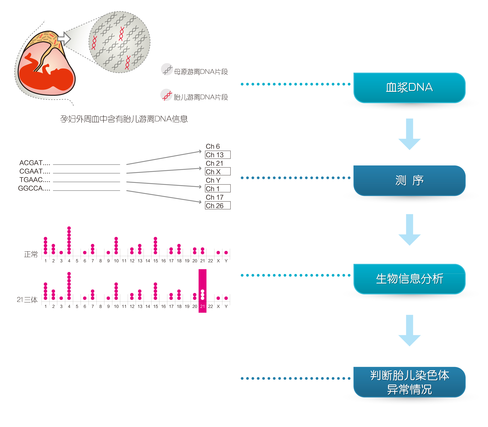
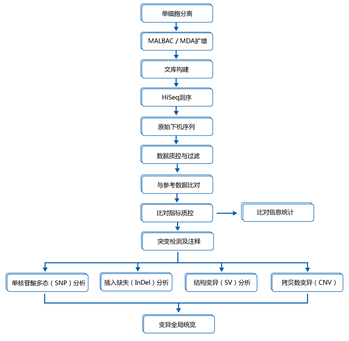
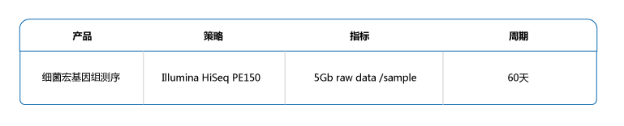

分子诊断室
实验室简介
病理学科在医院的医疗工作中占有重要的地位，它是从病理标本的形态改变对某些疾病提出明确病理诊断，提出可能的病因以及治疗和预后的因素。病理科的具体工作包括：
活体组织检查机体在患病时，除发生机能、代谢障碍外，常在相应器官、组织表现出一定的形态结构改变（病理变化）。从患者活体采取病变组织，包括：(1)从病变部位切取的小块组织及用纤维胃镜、纤维支气管镜等内窥镜钳取的病变组织；(2)手术摘除的部分器官、组织，如乳腺、胃、淋巴结等；(3)穿刺取出病变部位的组织，如肝、肾的穿刺组织,进行病理诊断，称为活体组织检查，简称活检。
细胞学检查把患者的尿、痰及穿刺抽取的胸水、腹水、脑脊液、宫颈刮片等制成细胞涂片，经固定、染色后进行显微镜下观察，作出疾病细胞学诊断。细胞学诊断的特点：简单易行、诊断迅速、准确性高。
冰冻切片手术台上做冰冻切片的理由是决定下一步治疗的方案。即：在手术过程中，迅速确定病变性质，决定手术范围。如乳腺肿块的良恶性，决定是否需作根治术， 又如肢体肿瘤的性质，决定是否截肢等。临床医师也需事先向病理医生介绍病情，写清病史，有利于病理医生作出快而准确可靠的冰冻切片诊断。
病理工作可为临床提供明确的诊断，确定疾病的性质，如是否为肿瘤，肿瘤的良、恶性、肿瘤的分型、分期等，这些对临床医生制订治疗方案，判断病人的预后都具有重要的指导作用。病理科的诊断被称为“金标准”。中国普通外科学创始人裘法祖教授讲到“最后一句话应该由病理学家来说”。充分证明了病理科在临床诊断中的 重要性。
北京医院病理科拥有达到国际先进水平病理设备以及经验丰富的病理专家、医生和技术人员。可开展全身各个系统的病理学检查，尤其是对神经系统疾病、前列腺疾病、呼吸系统疾病、消化系统疾病、淋巴造血系统疾病，神经内分泌系统疾病以及软组织肿瘤等的病理诊断方面积累了丰富经验。在痰、尿、胸水、腹水及细针穿刺细胞病理学诊断在国内处于领先水平，近年来开展了薄层细胞学涂片技术，进一步提高了细胞病理诊断水平，特别是对早期宫颈癌的普查具有重要的意义。病理科 除了可进行常规病理学检查外，还开展了免疫组化、核酸分子原位杂交等多项技术。我们不但承担本院的病理常规检查工作，还接收外院的病理标本和切片会诊。我 们将以优良的医疗质量、先进的医疗设备和优美的环境全心全意地为病人服务。
血液肿瘤综合性基因检测
目前，临床上对恶性血液病的诊断采用MICM分型，即形态学（morphology）、免疫学（immunology）、细胞遗传学（cytogenetics）、分子特征（molecular）的综合分型。特别是随着现代分子生物学技术的发展，尤其是基因序列检测技术的逐步成熟，对血液病患者的检查逐步深入到分子层面，基因突变已成为临床诊疗发展的新方向，并且符合“精准医学”概念。NCCN和WHO指南已经率先引入基因突变对现有的恶性血液肿瘤危险度预后分层系统做更细的分类。
基因突变检测作为新的分子特征检测手段在临床上有越来越重要的应用。使用高通量测序技术研究发现，基因突变在白血病细胞中普遍存在。在2012年《新英格兰医学期刊》（New England Journal of Medicine）的报道中，利用高通量测序（NGS）对398例急性髓细胞白血病（AML）患者进行筛查，发现97.3%的患者在18个目标基因中至少含有一个体细胞突变。进一步的分析发现，体细胞突变有协同发生的趋势，如超过三分之一的FLT3突变会合并NPM1突变。文章最后提出，多基因联合的突变分析在AML的预后分层中有潜在的应用价值。通过多基因联合突变检测分析，可弥补传统核型和流式分析技术的不足，为临床提供诊断和预后评估的依据；同时，临床对血液病的缓解监控已深入到分子水平，通过特征性的分子标记物（如突变）的监测，可以实现对患者治疗方案、周期、复发等的精确管理。
血液肿瘤的分类从上世纪70年代的FAB分型开始，发展到综合性的MICM分型，随着测序技术的发展，尤其高通量测序技术等新的诊断技术在临床的推广应用，血液肿瘤分类有望进入精确诊断时代。
再现性基因突变主要可分为以下几类：表观调控（如TET2、DNMT3A）、RNA 剪切（如SF3B1、SRSF2）、DNA 修复（如TP53）、转录调控（如AML1）、信号转导（如JAK2）、粘连蛋白复合物等。突变的发现和解析，可增加对疾病的发病机理的认识，并找到可能的治疗靶点。另外，基因突变给临床增加了一种观察疾病的新工具，可以从分子生物学的维度来理解疾病。
| 检测内容 | 样本要求 | 检测方法 |
临床热点： CEBPA、AML1（RUNX1）、EZH2、IKZF1、NPM1、KRAS、CBL、FLT3-ITD、NRAS、JAK2、KIT、ASXL1、SETBP1、DNMT3A、PHF6、ETV6、IDH1、TP53、PTPN11、IDH2、SF3B1、MPL、MLL-PTD、SRSF2、CALR、TET2、U2AF1、CSF3R、WT1、ZRSR2、SH2B3疾病相关： ABCB1（MDR1）、CDKN2A、GSTP1、NT5C2、ABCC3、CREBBP、HRAS、NTRK1、ABL、CRLF2、ID3、NTRK2、AKT2、CSF1R、IL7R、PDGFRA、AKT3、CTLA4、JAK1、PIGA、AMER1、CUX1、JAK3、PIK3CA、APC、CYP2C19、KDM6A、PTEN、ATM、CYP3A4、KMT2C、RAD21、ATRX、DIS3、KMT3A、RB1、BCL2、DNAH9、MAP2K4、SMAD4、BCOR、E2A、MAP3K7、SMC1A、BCORL1、EGFR、MDM2、SMC3、BRAF、ERCC1、MEF2B、STAG2、CACNA1E、ERG、MLH1、STAT5A、CARD11、FAM46C、MTHFR、STAT5B、CBLB、FBXW7、MYD88、SYK、CBLC、GATA1、NF2、TERC、CCND1、GATA2、NOTCH1、TPMT、CD79B、GNAS、、NOTCH2、TRAF3、CDA、GSTM1、NQO1、XRCC1 | EDTA抗凝骨髓/外周血（紫头管）2~3mL，骨髓为首选标本，MDS患者样本只能是骨髓。 | NGS |
- 骨髓增生异常综合征预后分层
- 骨髓增生异常综合征预后分层
- 骨髓增殖性肿瘤辅助诊断及预后评估
- 靶向药物相关及耐药位点检测
- 复发难治患者病因探查
实现全面的基因突变检测，为临床打造一款从预后分层到靶向用药的新型诊断工具。
从实验室接收样本起10个工作日
骨髓：2～3mL，置于EDTA抗凝管（紫头管）中，原始细胞或幼稚细胞比例>5%；4℃保存和运输。
外周血：2～3mL，白细胞数>5×109/L，原始细胞或异常细胞达到5%以上，白细胞数＜5×109/L的样品，需要相应增加样品量（>5mL）。
注：
1、MDS检测只接收骨髓样本。
2、有造血干细胞移植史或三个月内有输血史者（成分血除外）不宜接受检测。
3、为保证检测质量，样本运输需24小时内送到实验室。
1、初诊为各类型白血病的患者
2、初诊为骨髓增生异常综合征（MDS）的患者
3、初诊为骨髓增殖性肿瘤（MPN）的患者
4、初诊为骨髓增生异常/骨髓增殖性肿瘤（MDS/MPN）的患者
5、疑似血液肿瘤但尚未明确疾病类型的患者
6、复发难治的患者接受检测后也可获益
全套突变热点检测以排查病因
监控亚克隆低频突变，预防复发或疾病亚型转变
靶向药物相关及耐药位点检测

急性髓细胞白血病（AML）基因检测
临床上以细胞遗传学作为AML患者危险度预后分层的主要依据，然而只有40%的患者有特异的细胞遗传学表型，具有同样表型患者群体中，治疗结果也表现出异质性。
基因突变是一种新兴的分子特征检测指标，NCCN急性髓系白血病指南早已将c-KIT、FLT3、CEBPA及NPM1等四个基因突变整合到分子生物学异常中，进一步细化急性髓细胞白血病患者的危险度预后分层，其他的基因突变在急性髓细胞白血病的诊断、预后分层、治疗和药物选择上都有不同程度的指导作用。2015年最新的NCCN指南建议，可用NGS方法对AML相关的热点基因进行突变检测，辅助预后分层。
| 检测内容 | 样本要求 | 检测方法 |
临床热点： CEBPA、NPM1、FLT3-ITD、KIT、DNMT3A、TET2、WT1、ASXL1、RUNX1、IDH1、IDH2、MLL-PTD、PHF6、TP53、KRAS、NRAS疾病相关： CREBBP、ETV6、EZH2、ABCB1（MDR1）、AKT3、AMER1、APC、BCOR、BCORL1、CACNA1E、CBL、CDKN2A、CRLF2、CSF1R、CUX1、DIS3、DNAH9、EGFR、ERG、FAM46C、GSTP1、HRAS、JAK1、KDM6A、KMT2C、KMT3A、MAP2K4、MLH1、NF2、NQO1、NTRK1、NTRK2、PTPN11、RAD21、SETBP1、SMAD4、SMC1A、SMC3、STAG2、STAT5B、TPMT、U2AF1 | EDTA抗凝骨髓/外周血（紫头管）2~3mL，骨髓为首选标本。 | NGS |
| 基因名称 | 发生率 | 临床意义 |
| CEBPA | 7%-11% | CEBPA在AML患者中的突变率约为5%-14%，主要见于M1、M2和部分M4型，其中约70%属于CN-AML患者，CEBPA双等位基因突变预后良好。 |
| NPM1 | 28%-35% | NPM1突变常见于AML患者，在NK-AML患者中的发生频率为48%～53%，其中最常见于M4、M5a和M5b。NPM1突变常见于12号外显子，以6种变异体为主（突变A-F），最常见的为A型，占77%-80%病例。NPM1的A型突变具有更高的完全缓解率，更好的无事件生存率及总生存率，预后良好。 |
| FLT3 | 30% | FLT3-ITD在AML患者中的突变率约为20%，在NK-AML患者中的突变率可达到28%-34%。提示AML预后不良，且插入序列越长，预后越差。目前临床应用的小分子酪氨酸激酶抑制剂（TKIs）对阳性患者治疗，主要有索拉非尼、舒尼替尼。 |
| KIT | 20%的AML/CBF | KIT基因在染色体t(8;21)(q22;q22)或inv(16)(p13.1q22)异常为特征的AML（CBF-AML）患者中的突变率较高。12.7%-48.1%成人CBF-AML中存在KIT突变，D816V突变是CBF-AML预后不良指标，突变患者无病生存期短。该突变与伊马替尼耐药相关，可以指导系统性肥大细胞增生症和AML的治疗。 |
| DNMT3A | 18%-22% | DNMT3A基因的突变可出现在AML、MDS及其他血液恶性肿瘤患者中，在AML患者中高达20%，以M5型居多，其热点突变是发生于编码第882位精氨酸的错义突变，R882H突变导致AML治疗效果差，完全缓解率低，预后不良。 |
| TET2 | 15%的髓系肿瘤 | TET2突变的AML患者，较正常野生型患者预后差。 |
| WT1 | 7%-10% | 发生WT1突变的正常核型AML患者预后不良。 |
| ASXL1 | 3%-31% | ASXL1突变见于MDS、CMML、AML等是髓系肿瘤患者，AML患者中ASXL1突变提示预后不良。 |
| RUNX1 | 在正常核型的AML患者中发生率约16% | 发生RUNX突变的AML患者预后不良。 |
| IDH1 | 6%-9% | IDH1突变主要存在于AML、ALL及MPN中，在CN-AML患者中的发生率为5.5-9.6%，IDH1突变患者有较低的CR、较高的复发风险和较低的OS。 |
| IDH2 | 8%-12% | IDH2突变主要存在于AML、ALL及MPN中，集中发生于R140和R172位点，突变患者有较低的CR、较高的复发风险和较低的OS。 |
| MLL-PTD | 5%-11%的CN-AML | MLL-PTD是发生在11q23的部分串联重复，在CN-AML中的发生频率为5%-11%,可以作为MRD的监测指标,dupMLL基因阳性提示预后差，临床缓解率低。 |
| PHF6 | 3% | PHF6基因位于X染色体，大约3%的AML患者有PHF6基因突变，多见于M0、M1和M2。PHF6突变的患者一般具有较差的OS，且提示预后不良。 |
| TP53 | 7%原发性AML，58.8%核型复杂的AML患者 | TP53基因是重要的抑癌基因之一，TP53基因突变可以指导临床用药和提示预后，TP53基因突变提示预后不好。 |
| KRAS | 13% | 使用高剂量阿糖胞苷相对于使用低剂量，总生存期和无疾病进展期延长。 |
| NRAS | 45% | 与AML患者inv（16）/t（16;16）和inv（3）/t（3;3）核型异常的发生具有显著相关性；患者白细胞计数（WBC）多显著增高；对预后无显著影响。 |
骨髓增生异常综合征（MDS）基因检测
MDS的预后很大程度上取决于骨髓中原始细胞所占的百分比、血细胞下降程度以及细胞遗传学是否有异常。对所有怀疑MDS的患者均应进行染色体核型检测，MDS往往是染色体的部分或完全缺失，在染色体异常核型类型中最常见的是-5/5q-，-7/7q-，+8，20q-等。除细胞遗传学外，随着测序技术的发展，基因突变等分子生物学标记进入MDS的诊疗指南，用于协助证实MDS的诊断和预后。2014年的《骨髓增生异常综合征诊断与治疗中国专家共识》中，考虑到基因突变具有潜在应用价值，将基因突变列为可选检测项目。
| 检测内容 | 样本要求 | 检测方法 |
|
临床热点： TET2、DNMT3A、TP53、SF3B1、SRSF2、U2AF1、ZRSR2、ASXL1、RUNX1、EZH2、CBL、JAK2、NRAS、KRAS、PTPN11、SETBP1、ETV6、IDH1、IDH2疾病相关： BCOR、ATRX、BCORL1、BRAF、CDKN2A、CEBPA、CREBBP、CSF3R、CUX1、DNAH9、FLT3、GATA2、GNAS、KDM6A、KIT、MPL、NPM1、PHF6、PTEN、RAD21、SH2B3、STAG2、TERC、WT1 | EDTA抗凝骨髓(紫头管)2~3mL。 | NGS |
| 基因名称 | 发生率 | 临床意义 |
| TET2 | 20%-25% | 约90%的慢性粒单核细胞白血病（CMML）患者有一个或一个以上的基因突变，TET2基因突变频率为40%～60%。 |
| DNMT3A | 12%-18% | MDS最常受累的基因之一，基因突变频率在10%以上，可预测MDS患者应用甲基化药物的敏感性。 |
| TP53 | 8%-12% | MDS患者高危突变。 |
| SF3B1 | 18%-30% | 约一半的正常核型MDS患者中能发现有基因突变。MDS最常受累的基因之一，基因突变频率在10%以上。 |
| SRSF2 | 10%-15% | 约90%的慢性粒单核细胞白血病（CMML）患者有一个或一个以上的基因突变，SRSF2基因突变频率为30%～50%；MDS最常受累的基因之一，基因突变频率在10%以上。 |
| U2AF1 | 8%-12% | 约一半的正常核型MDS患者中能发现有基因突变。U2AF1基因多见于ASXL1突变或是20q-染色体异常的MDS患者。 |
| ZRSR2 | 5%-10% | 预后不良相关。 |
| ASXL1 | 15%-25% | 约90%的慢性粒单核细胞白血病（CMML）患者有一个或一个以上的基因突变，其中ASXL1的突变率约40%。ASXL1基因突变在CMML患者中提示预后不良，且更快的向白血病转化；MDS最常受累的基因之一，ASXL1基因突变的MDS患者归入高危组，可预测甲基化药物的敏感性。 |
| RUNX1 | 10%-15% | MDS中与预后不良独立相关。在罕见病例中可能存在家族性。 |
| EZH2 | 5%-10% | MDS患者高危突变。 |
| CBL | <5% | 主要用于幼年型-单核细胞白血病（JMML）的辅助诊断；在多种髓系肿瘤如MDS、MDS/MPN、CMML、JMML等均有发现，有CBL基因突变的患者预后差。 |
| JAK2 | <5% | V617F是最常见的典型MPN特征性突变，在MDS中发生率低于5%，在RARS、RARS-T以及5q-中发生率较高。 |
| NRAS | 5%-10% | 主要用于幼年型-单核细胞白血病（JMML）的辅助诊断；辅助MDS患者的诊断及预后判断。 |
| KRAS | 在JMML中突变率为10%-15%多伴随急变出现。 | |
| PTPN11 | 在JMML中突变率为40%-50% | 在JMML中突变率为40%-50%。 |
| SETBP1 | <5% | 与疾病进展有关，常见于CMML（5%-10%）和JMML（7%）。 |
| ETV6 | <5%MDS患者高危突变。 | |
| IDH1 | <5% | 预测MDS患者应用甲基化药物的敏感性。 |
| IDH2 | <5%预测MDS患者应用甲基化药物的敏感性。 |
急性淋巴细胞白血病（ALL）基因检测
目前依据ALL不同的生物学特性制定相应的治疗方案已取得较好疗效，大约80%的儿童和30%的成人能够获得长期无病生存，并且有治愈的可能。由于ALL患者主要为儿童，他们的长期生活质量逐步受到关注，现行的治疗方法虽然取得不错的疗效，但是仍有必要投入更多的临床研究，发掘分子标记物，为患者的个性化治疗提供指导。
| 检测内容 | 样本要求 | 检测方法 |
临床热点： NOTCH1、FLT3、FBXW7、ABL、CDKN2A、ETV6、TPMT疾病相关： AML1、BRAF、CREBBP、CRLF2、CTLA4、DNMT3A、GSTP1、IKZF1、IL7R、JAK1、JAK2、JAK3、KMT3A、KRAS、MDM2、MTHFR、MYD88、NRAS、NT5C2、PHF6、PTEN、PTPN11、SH2B3、STAT5B、SYK、TERC、TP53、WT1 |
EDTA抗凝骨髓/外周血（紫头管）2~3mL，骨髓为首选标本。 | NGS |
| 基因名称 | 发生率 | 临床意义 |
| NOTCH1 | 40%-60% | 成人ALL预后分层，NOTCH1突变在ALL患者中多与预后良好相关。 |
| FLT3 | 10%-15% | 在高二倍体儿童ALL患者和存在MLL重排的儿童ALL患者中存在。 |
| FBXW7 | 3%-10% | 成人ALL预后分层，约80%的T-ALL患者可以检测到NOTCH11或其信号转导途径成员FBXW7的突变，突变的成人ALL患者预后较好。 |
| ABL | 约70%的伊马替尼耐药患者 | 常与伊马替尼耐药相关。 |
| CDKN2A | 小于5% | CDKN2A缺失与预后不良相关。 |
| ETV6 | 12%的成人T-ALL;5-10%的B-ALL | 常见于12%的成人ETP-ALL患者。 |
| TPMT | — | 接受6-巯基嘌呤（6-MP）患者，考虑检测TPMT基因多态性，特别是使用6-MP后出现严重中性粒细胞减少的患者。 |
骨髓增殖性肿瘤（MPN）基因检测
2008年WHO修订后将骨髓增殖性疾病（MPD）改为骨髓增殖性肿瘤（MPN）。改版修订除了对MPN疾病亚型有调整外，其中一项重要的改变是增加了基因突变在疾病诊断中的应用。BCR/ABL融合基因仍然是慢性粒细胞白血病（CML）的标准，另外，由于JAK2基因V617F突变在大部分真性红细胞增多症（PV）及约一半的原发性骨髓纤维化（PMF）、特发性血小板增多症（ET）中存在，为此这三种疾病的诊断流程已经做了重大改变。联合检测JAK2、MPL和CALR基因突变，结果的阳性率可达97%。
| 检测内容 | 样本要求 | 检测方法 |
临床热点： JAK2、MPL、CALR、CSF3R、KIT、ASXL1、SETBP1、SH2B3、SRSF2、TET2、U2AF1、IDH1、IDH2、EZH2、CBL、DNMT3A、IKZF1、TP53、SF3B1疾病相关： EGFR、FAM46C、CSF1R、CBLC |
EDTA抗凝骨髓/外周血（紫头管）2~3mL，骨髓为首选标本。 | NGS |
| 基因名称 | 发生率 | 临床意义 |
| JAK2 | 在PV、ET和PMF中发生率分别为95%、60%、60% | 在PV、ET和PMF中发生率分别为95%、60%、60%。V617F是最常见的典型MPN特征性突变，在MDS中发生率低于5%，在RARS、RARS-T以及5q-中发生率较高。 |
| MPL | 在ET,PMF中有发生发生率为3%、7% | 适用于JAK2突变阴性的MPN患者，辅助骨髓增殖性疾病诊断。 |
| CALR | 在ET和PMF中发生率为20%、25% | 70-80%的JAK2和MPL突变阴性的ET和PMF患者中存在CALR基因突变，CALR基因突变主要见于MPN，很少见MDS患者，为MPN的特征性突变。联合检测JAK2、MPL和CALR基因突变，在MPN患者中阳性率达到97%。 |
| CSF3R | 80%-100%的CML中发生率 | CSF3R突变在CNL和非典型CML患者中非常普遍，代表对这些肿瘤一个潜在有用的诊断标准。在重型先天性中性粒细胞减少症（SCN）患者中，CSF3R的突变也较为常见。约1/3的SCN患者存在该突变，与MDS、AML的病程转化相关。 |
| KIT | 80%-100%的系统性肥大细胞增生症 | KIT基因突变在肥大细胞增多症患者中常出现，最常见的是D816突变。 |
| ASXL1 | 在PV、ET和PMF中发生率分别为7%、4%、20% | 约90%的慢性粒单核细胞白血病（CMML）患者有一个或一个以上的基因突变，其中ASXL1的突变率约40%。ASXL1基因突变在CMML患者中提示预后不良，且更快的向白血病转化；MDS最常受累的基因之一，ASXL1基因突变的MDS患者归入高危组，可预测甲基化药物的敏感性。 |
| SETBP1 | 30%的CNL | 主要用于幼年型-单核细胞白血病（JMML）的辅助诊断；为aCML患者的确诊提供临床辅助诊断；同时可以对aCML、sAML等髓系肿瘤的诊断、发病机制研究以及预后提供参考。 |
| SH2B3 | 5%原发性骨髓纤维化PMF | MPN急变期突变率为9.8%。 |
| SRSF2 | 19%的初期MPN中发生，在PMF中发生率17% | 约90%的慢性粒单核细胞白血病（CMML）患者有一个或一个以上的基因突变，SRSF2基因突变频率为30%～50%；MDS最常受累的基因之一，基因突变频率在10%以上。 |
| TET2 | 19%的初期MPN中发生，在PMF中发生率17% | 约90%的慢性粒单核细胞白血病（CMML）患者有一个或一个的基因以上突变，TET2基因突变频率为40%～60%。 |
| U2AF1 | 6%的初期MPN，在PMF中发生率为16% | 约一半的正常核型MDS患者中能发现有基因突变。U2AF1基因是MDS的常见突变之一。 |
| IDH1 | 19%的初期MPN（Blast-Phase MPN） | 19%的初期MPN（Blast-Phase MPN）。 |
| IDH2 | 22%的初期MPN,在PV，ET,PMF中发生率<5% | 预测MDS患者使用甲基化药物的敏感性。 |
| SF3B1 | 4%的初期MPN,在PMF中发生率7% | 约一半的正常核型MDS患者中能发现有基因突变。MDS最常受累的基因之一，基因突变频率在10%以上。 |
肿瘤个体化诊疗基因检测（247基因）
-
高通量测序（NGS）技术的不断发展、测序成本的大幅下降，为临床实现对肿瘤患者的精准治疗提供了有利条件。安诺优达精心挑选了与肿瘤用药密切相关的247个基因，涵盖指南推荐的所有基因及临床热点基因，分析200余种药物与基因变异的关系，可应用于肺癌、胃癌、结直肠癌、乳腺癌等实体瘤患者，尤其适用于复发、转移的晚期患者。根据患者的实际情况，可选择组织样本或血液样本进行基因检测：
1）对于新鲜组织、穿刺组织、石蜡切片组织等组织样本，可选择肿瘤个体化用药（NGS）基因检测；
2）对于血液样本，可以采集血液开展ctDNA检测。
基因检测的意义在于辅助医生制定个体化肿瘤治疗方案、疗效评价、预后评估及耐药监测。
专家视角
基因检测指导肿瘤个体化诊疗逐步成为业内共识
肺癌领域专家共识
1）高通量测序敏感性、特异性、准确性好，且组织样本与ctDNA液体活检一致性较高，ctDNA检测可作为组织活检的补充；
2）ctDNA检测可无创、实时取样，可以作为复发及耐药动态监测的有利工具；
3）ctDNA检测可克服肿瘤组织异质性带来的检测差异；
4）高通量测序基因检测可发现新的驱动基因，助推新药研发。
消化道肿瘤（胃癌和结直肠癌）领域专家观点
1）高通量测序基因检测，对临床分子分型意义深远；
2）ctDNA检测可避免肿瘤组织样本异质性带来的检测差异；
3）ctDNA检测可作为动态监测的有利工具。
乳腺癌领域专家观点：
ctDNA检测非常适合用于动态监测。
临床指南推荐
NCCN、ASCO、ESMO推荐：检测已知、多个平行临床可药物抑制的靶点，推荐NGS法液体活检技术。
-
临床意义
个体化用药指导：检测药物靶点基因，精确解读相关位点，分析基因变异与药物的关系，根据肿瘤患者特有的基因变异，评估药物的疗效和相关毒副作用，协助医生制定个体化的治疗方案；
耐药性分析：耐药性的产生源于肿瘤相关基因的不断突变，ctDNA检测的优势在于可以实时动态检测药物靶点突变，分析耐药性产生的根源，帮助医生调整治疗方案、选择合适的药物；
动态监测：ctDNA检测可以多个时间点取样，帮助医生实现对患者用药疗效、复发及转移的动态监测。
检测优势
全面检测：一次可检测247个肿瘤用药相关基因，解读200余种药物与基因变异的关系；
灵敏准确：可检测低至0.1%的低频突变，准确度在99.9%以上；
精准解读：采纳多个国际权威数据库、专业的医学遗传解读团队；
ctDNA检测的独特优势：无创便捷，只需取血6ml；可克服肿瘤异质性导致的检测信息遗漏；
可实现动态监测。
适用人群
治疗过程中出现耐药或治疗效果不佳的肿瘤患者；
需多基因、多位点检测，以制定完善治疗方案的肿瘤患者;
无法取得手术或穿刺组织的肿瘤患者（适合ctDNA检测）；
已有组织切片，但储存时间超过1年的肿瘤患者（适合ctDNA检测）。
-
检测内容
检测247个肿瘤相关基因 解读200余种肿瘤相关药物 指南/共识推荐基因37个
临床研究热点基因50个
敏感性和毒副作用相关基因160个
靶向药物125种（54种已获批，71种临床在研）
化疗药物51个（获批）、其它药物25种（获批）
检测流程
检测周期
自实验室接收到样本起，10个工作日内出具检测报告。
样本类型及取样要求
新鲜组织样本
样本类型 取样要求 保存及运输 适用检测项目 新鲜手术组织 >50mg黄豆粒大小 -80℃暂存, 尽快用干冰送至实验室 肿瘤个体化用药（NGS）基因检测 -80℃或-20℃冻存过夜（或液氮速冻） 肿瘤含量>50%，坏死细胞少于10% 新鲜穿刺 长度>1cm 1-2条 -80℃暂存, 尽快用干冰送至实验室 肿瘤个体化用药（NGS）基因检测123 组织 生理盐水冲洗干净后，-80℃冻存2h,或-20℃冻存过夜（或液氮速冻） 石蜡组织样本
样本类型 取样要求 保存及运输 适用检测项目 石蜡组织样本 >50mg黄豆粒大小 -常温保存,收集后尽快送至实验室 肿瘤个体化用药（NGS）基因检测 样本保存少于1年 固定时间6-24小时，小组织固定6-12小时 肿瘤含量>50%；坏死细胞少于10% FFPE石蜡组织切片（白）或蜡卷（另加1张HE染色片） 厚度>4μm, 面积>10mm×10mm 常温保存，切片盒子保存，应采取必要措施避免不同样本间蜡屑交叉污染 肿瘤个体化用药（NGS）基因检测 手术组织>10张，活检小组织>20张;固定时间6-24小时，小组织固定6-12小时 样本保存少于1年 收集后尽快送至实验室 肿瘤含量>50%；坏死细胞少于10% 血液样本
样本类型 取样要求 保存及运输 适用检测项目 血液样本 用Cell-free DNA采血管取血，6-10ml， 10ml静脉血，最低6ml ctDNA基因检测 采血后，缓慢颠倒10次，让血 取样后立刻轻柔上下翻转10次混匀 液与管内成分充分混匀 存储温度为6-26℃，切勿冷藏（-4℃）或冷冻（-20℃/-80℃） 采血完成后，须72小时内，6-26℃环境下送至实验室 胸水样本
样本类型 取样要求 保存及运输 适用检测项目 胸水样本 离心后，细胞群>50mg黄豆粒大小；-80℃或-20℃冻存过夜（或液氮速冻） -80℃暂存, 尽快用干冰送至实验室 肿瘤个体化用药（NGS）基因检测 基因检测列表
指南/共识推荐药物相关基因列表
靶向药物相关基因
指南/共识推荐基因（37个）
EGFR
PDGFRA
NPM1
FIP1L1
KIF5B
ALK
PDGFRB
SMO
DDR2
CD74
ERBB2
ABL1
PTCH1
RARA
SDC4
BRAF
JAK2
FLT3
MET
EZR
KRAS
BRCA1
DNMT3A
RET
PTEN
NRAS
BRCA2
AKT1
TP53
KIT
ROS1
EML4
FGFR2
PIK3CA
PML
ESR1
FGFR1
临床研究阶段药物相关基因列表
靶向药物相关基因
临床研究阶段基因（50个）
AKT2
FGFR3
NOTCH1
CXCR4
PRKAR1A
AKT3
GNA11
NOTCH2
CSF1R
AR
BCR
GNAQ
PIK3R1
NCOA4
EZH2
BTK
HRAS
SLC34A2
CCDC6
TEKT4
CDK4
IDH1
SMAD4
ZRSR2
TET2
CDKN2A
IDH2
GOPC
LRRK2
SF3B1
KDR
CDK6
TSC1
MAP2K1
STAT3
CSF3R
CRLF2
JAK1
fes
PTPN11
CTNNB1
U2AF1
JAK3
EGF
MLL3
CREBBP
CD79B
CALR
IL7R
MLH1
敏感性和毒副作用相关基因列表
化疗药物相关基因
毒性及敏感性相关基因（160个）
ABCA1
CYP2C8
KLC1
CHST3
SLC22A4
ABCB1
CYP2C9
LEPR
CMPK1
SLC22A5
ABCC1
CYP2D6
LIG3
COMT
SLC28A3
ABCC10
CYP2E1
LRP2
CTLA4
SLC29A1
ABCC11
CYP3A4
MAD1L1
CYBA
SLC31A1
ABCC2
CYP3A5
MAP3K1
CYP19A1
SLCO1B1
ABCC3
CYP4B1
MAP3K5
CYP1A1
SLCO1B3
ABCC4
DCBLD1
MAP4K4
CYP1B1
SLIT1
ABCC6
DCK
MTHFD1
CYP2B6
SOD2
ABCG2
DHFR
MTHFR
CYP2C19
SOX10
ACTG1
DPYD
MTR
HLA-G
SPECC1L
ADH1C
DSCAM
MTRR
HMGCR
SPG7
ADORA2A
DYNC2H1
MUTYH
HTR3B
SULT1C4
ALDH1A1
EIF3A
NALCN
IDO1
SULT2B1
AMPD1
EPHX1
NAT2
IFNL3
TGFB1
APOA5
ERCC1
NCF4
IFNL4
TLR4
APOE
ERCC2
NOS3
IL10
TNF
ARID5B
ESR2
NQO1
IMPDH2
TNFAIP3
ATIC
F2
NQO2
ITPA
TOP1
ATP7A
FCGR3A
NT5C2
KCNQ5
TPMT
BCL2
FDPS
NUDT15
RRM1
VEGFA
BCL2L11
FOLR3
OASL
RRM2
TRAM2-AS1
BLMH
FPGS
OPRM1
RRM2B
TSG1
C8orf34
GALNT14
PARD3B
SEMA3C
TUBB1
CAPG
GATA3
PPARA
SHMT1
TYMP
CASP7
GGH
PPARD
SLC10A2
TYMS
CBR1
GSTA1
PRDX4
SLC19A1
UBE2I
CBR3
GSTM1
PTGS2
SLC22A12
UGT1A1
CCND1
GSTM3
RAC2
SLC22A16
UGT1A10
CDA
GSTP1
RAD52
SLC22A2
ZNF423
CETP
GSTT1
RPL13
UGT1A4
XRCC1
XRCC4
XPC
UMPS
UGT1A8
UGT1A9
基因检测对应分析药物列表
靶向药物列表
获批药物(54个)
吉非替尼 厄洛替尼 阿法替尼 司美替尼 帕纳替尼 拉帕替尼 曲妥单抗 克唑替尼 埃克替尼 西妥昔单抗 曲美替尼 瑞戈非尼 贝伐单抗 Osimertinib（AZD9291) 帕唑帕尼 阿西替尼 帕尼单抗 色瑞替尼 阿雷替尼 舒尼替尼 达拉菲尼 博舒替尼 托法替尼 维莫德吉 吉妥珠单抗 坦罗莫司 奥拉帕尼 鲁索利替尼 西罗莫司 42-(二甲基亚膦酰)雷帕霉素 威罗菲尼 达沙替尼 尼达尼布 帕博西尼 重组人血管内皮抑制素 凡德他尼 尼洛替尼 伊马替尼 乐伐替尼 Blinatumomab 卡博替尼 帕妥珠单抗 利妥昔单抗 罗非昔布 Cobimetinib 依维莫司 硼替佐米 依鲁替尼 塞来昔布 Necitumumab 索拉非尼 尼妥珠单抗 艾代拉里斯 T-DM1 在研药物（71个）
来那替尼 达克米替尼 瑞他霉素 厄妥索单抗 易吡替尼 胶霉毒素 多韦替尼 诺司替尼 来他替尼 马赛替尼 奎扎替尼 沃利替尼 夫拉平度 坦度替尼 德立替尼 曲西立滨 巴非替尼 马妥珠单抗 莫特塞尼 哌立福新 坦螺旋霉素 陶扎色替 培利替尼 洛拉替尼 米哚妥林 卡奈替尼 Tivantinib XL888 Apitolisib ALLO-1 MK-2206 AZD5363 Ganetespib Rebastinib Entrectinib WZ4002 NVP-BGJ398 Uprosertib TSR-011 RO5212054 Brigatinib BMS-690514 HM61713 TAK733 RAF265 NVP-TAE684 Buparlisib Luminespib Imgatuzumab ARQ 736 AZD4547 Alpelisib PD173074 Sapitinib Encorafenib Crenolanib NVP-BEZ235 PI-103 Omipalisib ASP8273 Binimetinib PD0325901 RO5126766 Cenisertib Poziotinib SU5614 Pictilisib XL647 Ipatasertib Gandotinib MK-1775 化疗药物列表
获批药物（51个）
氟尿嘧啶 亚叶酸钙 卡培他滨 紫杉醇 表柔比星 顺铂 奥沙利铂 伊立替康 培美曲塞 多西他赛 吉西他滨 长春新碱 环磷酰胺 长春瑞滨 卡铂 奈达铂 甲氨蝶呤 沙利度胺 依托泊苷 丝裂霉素 柔红霉素 三亚胺硫磷 喷司他丁 天冬酰胺酶 伊达比星 雷利度胺 阿霉素 阿糖胞苷 环孢霉素 培门冬酶 维A酸 卡巴他赛 三氧化二砷 巯基嘌呤 更生霉素 福莫司汀 司莫司汀 异环磷酰胺 硫鸟嘌呤 氟达拉滨 白消安 米托蒽醌 羟基脲 替莫唑胺 地西他滨 高三尖杉酯碱 博来霉素 甲磺酸艾日布林 克拉屈滨 氯法拉滨 强的松
其他药物
获批药物（25个）
辛伐他汀 帕比司他 地塞米松 他莫昔芬 来曲唑 氟维司群 伏林司他 醋酸甲羟孕酮 替诺福韦 阿那曲唑 阿那格雷 戈舍瑞林 阿比特龙 阿德福韦酯 依西美坦 托瑞米芬 4-羟基他莫昔芬 唑来磷酸 拉米夫定 芬太尼 纳武单抗 a-2a型干扰素 a-2b型聚乙二醇干扰素 贝利司他 重组干扰素α
肺癌基因检测
-
高通量测序（NGS）技术的不断发展、测序成本大幅下降，为临床实现对肿瘤患者的精准治疗提供了有利条件。我们精心挑选了与肿瘤密切相关的247个基因，涵盖指南推荐的所有基因及临床热点基因，分析200余种药物与基因变异的关系，帮助肺癌患者进行基因检测，尤其适用于复发、转移的中晚期患者。根据患者能够提供的样本不同，推出了两类检测产品：
安复坦AnnoUltra-ctDNA检测：适用于血液样本，采集血液后利用NGS技术开展ctDNA基因检测；
安谱健AnnoPro-组织检测：适用于新鲜组织（包括新鲜胸水样本）、穿刺组织、石蜡切片组织等组织样本，利用NGS技术进行基因检测。
非小细胞肺癌从组织分型到分子分型的发展过程
肿瘤组织病理学分型是目前临床肿瘤治疗方案的基本出发点，但越多越多的l临床研究表明，根据肿瘤驱动基因变异进行的分子分型可以更多地帮助患者有针对性地选择个体化的治疗方案，实现精准治疗。
肺癌驱动基因谱
基因 关联靶向药物 EGFR（指南推荐） 厄洛替尼、吉非替尼、埃克替尼、奥希替尼（AZD9291）、阿法替尼 ALK（指南推荐） 克唑替尼、厄洛替尼、吉非替尼、色瑞替尼、艾乐替尼 ERBB2（指南推荐） 阿法替尼、厄洛替尼、吉非替尼 ROS1（指南推荐） 克唑替尼、卡博替尼 MET（指南推荐） 克唑替尼、卡博替尼 RET（指南推荐） 卡博替尼 BRAF（指南推荐） 达拉菲尼、威罗菲尼 KRAS 厄洛替尼、吉非替尼 TP53 帕唑帕尼
-
个体化用药指导：检测药物靶点基因，精确解读相关位点，分析基因变异与药物的关系，根据肿瘤患者特有的基因变异推荐合适的药物，评估药物的疗效和相关毒副作用，协助临床制定个体化的治疗方案；
耐药性分析：耐药性的产生源于肿瘤相关基因的不断突变，ctDNA检测的优势在于可以实时动态检测药物靶点突变，分析耐药性产生的根源，帮助医生适时调整治疗方案、选择合适的药物；
动态监测：ctDNA检测可以多个时间点取样，帮助医生实现对患者用药疗效、复发及转移的动态监测。
在肿瘤被诊断后，寻求更适合自己的用药方案的患者；
肿瘤用药疗效不佳，希望寻求更优用药方案的患者；
传统检测后未发现可用靶药，寻求更多靶药用药机会的患者；
出现耐药现象，需要更换治疗方案的患者；
ctDNA基因检测独有的适应人群：
复发、转移，无法获得组织样本的患者；
组织量太少不足以检测的晚期患者；
有动态监测意愿，期望提早发现可能的复发、转移征兆的患者。
全面综合：一次可检测247个肿瘤相关基因，解读200余种药物与基因变异的关系； 灵敏准确：可检测低至0.1%的低频突变，准确度在99.9%以上；
精准解读：采纳多个国际权威数据库、专业的医学遗传解读团队；
无创便捷：只需取血10ml；可在一定程度上克服肿瘤异质性；可实现动态监测。
-
6-10ml外周血，cell free DNA管，6-26℃保存
外周血6-10ml（cell free DNA管，6-26℃保存）+以下四者之一：
1、新鲜组织：肿瘤细胞大于50%，坏死细胞小于10%，黄豆粒大小，保护液，6-26℃保存；
2、新鲜穿刺组织：长度＞1cm，1-2条；
3、蜡块：肿瘤细胞大于50%，坏死细胞小于10%，组织面积10mm×10mm，附带HE染色切片，切片盒，常温运输；
4、石蜡切片：肿瘤细胞大于50%，坏死细胞小于10%，切片上组织厚度＞4μm，组织面积10mm×10mm，10片切片，附带HE染色切片，切片盒，常温运输。
自实验室接受样本起，10个工作日出具检测报告

-
9基因 EGFR、ALK、ERBB2、ROS1、MET、BRAF、RET、KARS、TP53 12种药物 克唑替尼、厄洛替尼、吉非替尼、埃克替尼、奥希替尼、卡博替尼、色瑞替尼、阿法替尼、达拉菲尼、威罗菲尼、帕唑帕尼、艾乐替尼 检测基因23个 ALK、BRAF、EGFR、ERBB2、FGFR1、FGFR2、KIT、KRAS、MET、NRAS、PDGFRA、PIK3CA、PTEN、RET、ROS1、TP53、VEGFR2、CDA、ABCB1、XRCC1、ERCC1、GSTP1、MTHFR 解读药物28个 克唑替尼、厄洛替尼、吉非替尼、埃克替尼、贝伐单抗、舒尼替尼、曲妥珠单抗、依维莫司、重组人血管内皮抑制素、奥希替尼、卡博替尼、色瑞替尼、达拉菲尼、威罗菲尼、帕唑帕尼、阿法替尼、纳武单抗、尼达尼布、Portrazza、艾乐替尼、曲美替尼、吉西他滨、紫杉醇、卡铂、奈达铂、顺铂、奥沙利铂、培美曲塞 检测基因55个 ALK、BRAF、EGFR、ERBB2、FGFR1、FGFR2、KIT、KRAS、MET、NRAS、PDGFRA、PIK3CA、PTEN、RET、ROS1、TP53、VEGFR2、AKT1、BRCA1、BRCA2、CDK4、CDK6、CDKN2A、CXCR4、DDR2、FGFR3、FLT3、HRAS、JAK1、JAK2、MAP2K1、PIK3R1、TSC1、IDH1 、CDA、ABCB1、XRCC1、ERCC1、GSTP1、MTHFR、ATIC、C8orf34、CASP7、CYP1A1、CYP1B1、CYP4B1、DYNC2H1、DPYD、ERCC2、MTRR、NQO1、SEMA3C、SOD2、UGT1A1、XPC 解读药物85个 克唑替尼、厄洛替尼、吉非替尼、埃克替尼、贝伐单抗、舒尼替尼、曲妥珠单抗、依维莫司、重组人血管内皮抑制素、奥希替尼、卡博替尼、色瑞替尼、达拉菲尼、威罗菲尼、帕唑帕尼、阿法替尼、纳武单抗、尼达尼布、P o r t r a z z a、艾乐替尼、达沙替尼、拉帕替尼、索拉非尼、尼妥珠单抗、西罗莫司/雷帕霉素、阿帕替尼、Cobimetinib、奥拉帕尼、帕尼单抗、帕纳替尼、鲁索利替尼、曲美替尼、凡德他尼、依鲁替尼、帕博西尼、司美替尼、替西罗莫斯/坦罗莫司、来那替尼、entrectinib、坦螺旋霉素、Brigatinib、ASP8273、AZD4547、AZD5363、NVP-BGJ398、buparlisib、BMS-690514、卡奈替尼、达克米替尼、沃利替尼、ganetespib、pictilisib、HM61713、德立替尼、Binimetinib、MK-2206、PD0325901、培利替尼、洛拉替尼、瑞他霉素、诺司替尼、多韦替尼、XL647、AG-120、Defactinib、吉西他滨、紫杉醇、卡铂、奈达铂、顺铂、奥沙利铂、培美曲塞、多柔比星（阿霉素）、甲氨蝶呤、长春瑞滨、多西他赛、依托泊苷、异环磷酰胺、环磷酰胺、长春新碱、丝裂霉素、氟尿嘧啶、表柔比星、伊立替康、卡培他滨 靶向药物相关基因 EGFR、PDGFRA、NPM1、FIP1L1、KIF5B、ALK、PDGFRB、SMO、DDR2、CD74、ERBB2、ABL1、PTCH1、RARA、SDC4、BRAF、JAK2、FLT3、MET、EZR、KRAS、BRCA1、DNMT3A、RET、PTEN、NRAS、BRCA2、AKT1、TP53、KIT、ROS1、EML4、FGFR2、PIK3CA、PML、ESR1、FGFR1、AKT2、FGFR3、NOTCH1、CXCR4、PRKAR1A、AKT3、GNA11、NOTCH2、CSF1R、AR、BCR、GNAQ、PIK3R1、NCOA4、EZH2、BTK、HRAS、SLC34A2、CCDC6、TEKT4、CDK4、IDH1、SMAD4、ZRSR2、TET2、CDKN2A、IDH2、GOPC、LRRK2、SF3B1、KDR、CDK6、TSC1、MAP2K1、STAT3、CSF3R、CRLF2、JAK1、fes、PTPN11、CTNNB1、U2AF1、JAK3、EGF、MLL3、CREBBP、CD79B、CALR、IL7R、MLH1 化疗药物相关基因 ABCA1、CYP2C8、KLC1、CHST3、SLC22A4、ABCB1、CYP2C9、LEPR、CMPK1、SLC22A5、ABCC1、CYP2D6、LIG3、COMT、SLC28A3、ABCC10、CYP2E1、LRP2、CTLA4、SLC29A1、ABCC11、CYP3A4、MAD1L1、CYBA、SLC31A1、ABCC2、CYP3A5、MAP3K1、CYP19A1、SLCO1B1、ABCC3、CYP4B1、MAP3K5、CYP1A1、SLCO1B3、ABCC4、DCBLD1、MAP4K4、CYP1B1、SLIT1、ABCC6、DCK、MTHFD1、CYP2B6、SOD2、ABCG2、DHFR、MTHFR、CYP2C19、SOX10、ACTG1、DPYD、MTR、HLA-G、SPECC1L、ADH1C、DSCAM、MTRR、HMGCR、SPG7、ADORA2A、DYNC2H1、MUTYH、HTR3B、SULT1C4、ALDH1A1、EIF3A、NALCN、IDO1、SULT2B1、AMPD1、EPHX1、NAT2、IFNL3、TGFB1、APOA5、ERCC1、NCF4、IFNL4、TLR4、APOE、ERCC2、NOS3、IL10、TNF、ARID5B、ESR2、NQO1、IMPDH2、TNFAIP3、ATIC、F2、NQO2、ITPA、TOP1、ATP7A、FCGR3A、NT5C2、KCNQ5、TPMT、BCL2、FDPS、NUDT15、RRM1、VEGFA、BCL2L11、FOLR3、OASL、RRM2、TRAM2-AS1、BLMH、FPGS、OPRM1、RRM2B、TSG1、C8orf34、GALNT14、PARD3B、SEMA3C、TUBB1、CAPG、GATA3、PPARA、SHMT1、TYMP、CASP7、GGH、PPARD、SLC10A2、TYMS、CBR1、GSTA1、PRDX4、SLC19A1、UBE2I、CBR3、GSTM1、PTGS2、SLC22A12、UGT1A1、CCND1、GSTM3、RAC2、SLC22A16、UGT1A10、CDA、GSTP1、RAD52、SLC22A2、ZNF423、CETP、GSTT1、RPL13、UGT1A4、XRCC1、XRCC4、XPC、UMPS、UGT1A8、UGT1A9 相关药物 靶向药物（126） 吉非替尼、厄洛替尼、阿法替尼、司美替尼、帕纳替尼、拉帕替尼、曲妥单抗、克唑替尼、埃克替尼、西妥昔单抗、曲美替尼、瑞戈非尼、贝伐单抗、奥西替尼、帕唑帕尼、阿西替尼、帕尼单抗、色瑞替尼、阿雷替尼、舒尼替尼、达拉菲尼、博舒替尼、托法替尼、维莫德吉、吉妥珠单抗、坦罗莫司、奥拉帕尼、鲁索利替尼、西罗莫司、42-雷帕霉素、威罗菲尼、达沙替尼、尼达尼布、帕博西尼、重组人血管内皮抑制素、凡德他尼、尼洛替尼、伊马替尼、乐伐替尼、Blinatumomab、卡博替尼、帕妥珠单抗、利妥昔单抗、罗非昔布、Cobimetinib、依维莫司、硼替佐米、依鲁替尼、塞来昔布、Necitumumab、索拉非尼、尼妥珠单抗、艾代拉里斯、T-DM1、来那替尼、达克米替尼、瑞他霉素、厄妥索单抗、易吡替尼、胶霉毒素、多韦替尼、诺司替尼、来他替尼、马赛替尼、奎扎替尼、沃利替尼、夫拉平度、坦度替尼、德立替尼、曲西立滨、巴非替尼、马妥珠单抗、莫特塞尼、哌立福新、坦螺旋霉素、陶扎色替、培利替尼、洛拉替尼、米哚妥林、卡奈替尼、艾乐替尼、Tivantinib、XL888、Apitolisib、ALLO-1、MK-2206、AZD5363、Ganetespib、Rebastinib、Entrectinib、WZ4002、NVP-BGJ398、Uprosertib、TSR-011、RO5212054、Brigatinib、BMS-690514、HM61713、TAK733、RAF265、NVP-TAE684、Buparlisib、Luminespib、Imgatuzumab、ARQ736、AZD4547、Alpelisib、PD173074、Sapitinib、Encorafenib、Crenolanib、NVP-BEZ235、PI-103、Omipalisib、ASP8273、Binimetinib、PD0325901、RO5126766、Cenisertib、Poziotinib、SU5614、Pictilisib、XL647、Ipatasertib、Gandotinib、MK-1775 化疗药物（51个） 氟尿嘧啶、亚叶酸钙、卡培他滨、紫杉醇、表柔比星、顺铂、奥沙利铂、伊立替康、培美曲塞、多西他赛、吉西他滨、长春新碱、环磷酰胺、长春瑞滨、卡铂、奈达铂、甲氨蝶呤、沙利度胺、依托泊苷、丝裂霉素、柔红霉素、三亚胺硫磷、喷司他丁、天冬酰胺酶、伊达比星、雷利度胺、阿霉素、阿糖胞苷、环孢霉素、培门冬酶、维A酸、卡巴他赛、三氧化二砷、巯基嘌呤、更生霉素、福莫司汀、司莫司汀、异环磷酰胺、硫鸟嘌呤、氟达拉滨、白消安、米托蒽醌、羟基脲、替莫唑胺、地西他滨、高三尖杉酯碱、博来霉素、甲磺酸艾日布林、克拉屈滨、氯法拉滨、强的松 其他药物（25个） 辛伐他汀、帕比司他、地塞米松、他莫昔芬、来曲唑、氟维司群、伏林司他、醋酸甲羟孕酮、替诺福韦、阿那曲唑、阿那格雷、戈舍瑞林、阿比特龙、阿德福韦酯、依西美坦、托瑞米芬、4-羟基他莫昔芬、唑来磷酸、拉米夫定、芬太尼、纳武单抗、a-2a型干扰素、a-2b型聚乙二醇干扰素、贝利司他、重组干扰素α
乳腺癌、卵巢癌基因检测
-
——唯一符合NCCN指南HBOC遗传风险筛查的基因检测
BRCA1和BRAC2基因编码肿瘤抑制蛋白，与双链DNA受损后的复制修复有关。

1. SEER Stat Fact Sheets: Breast cancer. http://seer.cancer.gov/statfacts/html/breast.html.
2. SEER Stat Fact Sheets: Ovary Cancer. http://seer.cancer.gov/statfacts/html/ovary.html.
3. Balmaña J, et al. Ann Oncol 2011;22(Suppl. 6):vi31–vi34.
最新指南建议高危人群进行BRAC1/2或多基因检测
NCCN指南建议：BRAC1/2基因突变者需遵循遗传性乳腺癌/卵巢癌综合征（HBOC）的风险管理措施
乳腺癌BRCA1/2基因检测（标准版）
使用NGS检测BRCA1和BRCA2两个基因编码区（共1.6万个碱基）的SNP（单核苷酸多态性）和InDel(插入/缺失)。
乳腺癌17基因检测（权威版）
使用NGS检测乳腺癌相关17基因编码区的SNP（单核苷酸多态性）和InDel(插入/缺失)。
NCCN指NCCN指南列出的17个乳腺癌相关基因
BRCA1、BRCA2、ATM、BARD1、BRIP1、CDH1、CHEK2、MLH1、MSH2、MSH6、PALB2、PMS2、PTEN、RAD51C、RAD51D、STK11、TP53
乳腺癌40基因检测（定制版）
使用NGS检测乳腺癌相关40基因编码区的SNP（单核苷酸多态性）和InDel(插入/缺失)。关于乳腺癌40基因：整合了NCCN指南推荐的17个乳腺癌相关基因（如BRCA1、BRCA2、PALB2等）和权威文献中列出的与乳腺癌相关的23个基因。
NCCN指南列出的17个乳腺癌相关基因
BRCA1、BRCA2、ATM、BARD1、BRIP1、CDH1、CHEK2、MLH1、MSH2、MSH6、PALB2、PMS2、PTEN、RAD51C、RAD51D、STK11、TP53
权威文献中列出的23个乳腺癌相关基因
CDK4、CDKN2A、CYP17A1、FANCC、FANCD2、FANCI、FANCM、FGFR3、MLH3、MSH3、MRE11A(MRE11)、MUTYH、NBN(NBS1)、NF1、PIK3CA、PMS1、PPM1D、RAD50、RAD51、RGSL1、SLX4、WRN、XRCC2
鉴于乳腺癌基因筛查的必要性，美国国立综合癌症网络（NCCN）及中国抗癌协会乳腺癌专业委员会制定了针对性的临床实践指南。
NCCN：遗传高危人群需遵循遗传性乳腺癌/卵巢癌综合征（HBOC）风险管理办法。
2015年版的《中国抗癌协会乳腺癌诊治指南与规范》，新增BRCA1/2基因突变为保乳治疗的相对禁忌症。
BRCA1/2基因突变与保乳手术的关系
BRCA1/2突变携带者保乳手术后，10年和15年单侧乳腺癌患病概率分别为12%和24%，而未携带者分别为9%和17%。BRCA1/2突变携带者保乳手术后，10年和15年对侧乳腺癌患病概率分别为26%和39%，而未携带者分别为3%和7%。
携带BRCA1/2基因突变会增加同侧和对侧乳腺癌复发风险，在评估是否进行保乳手术时，应该考虑BRCA1/2基因突变的状态。

回顾性研究，入选390名乳腺癌1期和2期携带BRCA1/2基因突变的患者，其中181名患者接受双侧乳房切除手术，209名接受单侧乳房切除手术，中位随访时间为14.3年（0.1-20年）。
携带基因突变会增加对侧乳腺癌复发风险，在判断BRCA1/2基因突变乳腺癌患者是否进行切除手术时，应考虑到该因素。
Treatment Response and Exploratory Subgroup Analysis(Table 1）
No. of Patients
%
95% CI
Response
Overall RR(N-86)
22
25.6
16.8 to 36.1
-
Treatment Response and Exploratory Subgroup Analysis(Table 2）
RR by subgroup
BRCA1/2 statusNo. of Patients
%
95% CI
Response
Mutated (n＝11)
6
54.5
23.4 to 83.3
6 PR
Wild type (n＝66)
13
19.7
10.9 to 31.3
10 PR, 3 CR
Unknown (n＝9)
3
33.3
7.5 to 70.1
3 PR
Cisplatin（n=43）
14
32.6%
19.1 to 48.5
—
First line（n=34）
12
35.3
—
10 PR, 2 CR
Second line（n=9）
2
22.2
—
2 PR
Carboplatin（n=43）
8
18.6
8.4 to 33.4
—
First line（n=35）
8
22.9
—
7 PR, 1 CR
Second line（n=8）
0
0
—
—
First line（n=69）
20
29.0
—
—
Second line（n=17）
2
11.8
—
—
Abbreviations:CR,complete response;PR,partial response;RR,response rate
图表来源：J Clin Oncol ,2015, 33: 1902-1909
结果显示：携带BRCA1/2基因突变者在接受铂类化疗后，总缓解率达到54.5%，是未携带BRCA1/2基因突变者的3倍左右。
携带BRCA1/2基因突变的乳腺癌患者由于其编码蛋白功能的缺失，所以通常预示化疗敏感性，特别是对于DNA损伤剂类的化疗药物，如铂类。

发病年龄≤45岁的乳腺癌患者；
家族性乳腺癌患者；
三阴性乳腺癌患者；
双侧原发性乳腺癌患者；
男性乳腺癌患者；
有卵巢上皮癌、输卵管癌、原发性腹膜癌既往病史的乳腺癌患者；
具有血缘关系的亲属中有乳腺癌相关基因突变的携带者；
准备做保乳手术的乳腺癌患者。
外周血，体积≥5ml；采血前无需空腹，保持正常饮食作息即可;
（注：有造血干细胞移植史或者三个月内有输血史者不宜接受检测）
标准版（10个工作日）、权威版和定制版（15个自然日）
基于高通量测序技术精心挑选了与肿瘤用药密切相关的247个基因，涵盖指南推荐的所有基因及临床热点基因，分析200余种药物与基因变异的关系，可应用于乳腺癌患者，尤其是复发、转移的晚期患者。同时，根据乳腺癌患者在诊疗过程中的不同需求，制定个性化的基因Panel和解读对应的药物。样本类型：组织或外周血。
复发转移或初诊晚期，有靶向药物需求的乳腺癌患者（依据Her2状态分3种情况）
1.复发转移或初诊晚期，有靶向药物需求的乳腺癌患者
2.出现耐药或疗效不佳，需要调整用药方案的乳腺癌患者（依据Her2状态分3种情况和是否优化方案）
1.经多线治疗无效，需要寻求更多治疗方案的乳腺癌患者
2.希望得到最佳治疗方案的乳腺癌患者
注：符合上述情况但无法提供组织（组织储存时间不超过1年）的晚期乳腺癌患者可选择ctDNA检测方式。
乳腺癌ctDNA基因检测和个体化用药基因检测（高通量测序）
基础版
检测基因11个
ESR1、VEGFR2、PTEN、PIK3CA、MET、ERBB2、EGFR、FGFR2、TP53、CDK4、CDK6
解读药物15个
氟维司群、阿帕替尼、拉帕替尼、依维莫司、曲妥珠单抗、伊马替尼、尼达尼布、阿法替尼、克唑替尼、
T-DM1、帕妥珠单抗、帕唑帕尼、索拉非尼、帕博西尼、来那替尼全面版
检测基因29个
ERBB2、BRAF、BRCA1、BRCA2、CDK4、CDK6、EGFR、ESR1、FGFR1、FGFR2、KRAS、MET、NRAS、PDGFRA、PIK3CA、PTEN、TP53、VEGFR2、DPYD、CASP7、CYP19A1、CYP2D6、CYP4B1、GSTP1、ERCC1、XRCC1、CDA、TUBB1、ABCB1
解读药物46个
氟维司群、曲妥珠单抗、依维莫司、拉帕替尼、帕妥珠单抗、阿法替尼、尼达尼布、尼妥珠单抗、司美替尼、西妥昔单抗、克唑替尼、达沙替尼、Cobimetinib、伊马替尼、索拉非尼、舒尼替尼、埃克替尼、尼妥珠单抗、贝伐单抗、重组人血管内皮抑制素、西罗莫司/雷帕霉素、阿帕替尼、帕博西尼、T-DM1、奥拉帕尼、帕尼单抗、顺铂、环磷酰胺、多西他赛、曲美替尼、凡德他尼、表柔比星、阿霉素，紫杉醇、卡铂、长春瑞滨、卡培他滨、氟尿嘧啶、吉西他滨、阿那曲唑、依西美坦、戈舍瑞林、来曲唑、他莫昔芬、托瑞米芬、来那替尼
高级版
检测基因60个
ERBB2、AKT1、BRAF、BRCA1、BRCA2、CDK4、CDK6、CDKN2A、EGFR、ESR1、FGFR1、FGFR2、FGFR3、KRAS、MET、NRAS、PDGFRA、PIK3CA、PIK3R1、PTEN、TP53、VEGFR2、ALK、BCR-ABL1、BTK、CALR、CD79B、CSF3R、CXCR4、DDR2、FLT3、HRAS、JAK1、JAK2、KIT、MAP2K1、PDGFRB、PTCH1、RET、ROS1、SMO、TSC1、ABCB1、ATIC、CASP7、CDA、CYP19A1、CYP1A1、CYP1B1、CYP2D6、CYP4B1、DPYD、ERCC1、GSTP1、MTHFR、MTRR、SOD2、TUBB1、XRCC1、XPC
解读药物81个
曲妥珠单抗、依维莫司、拉帕替尼、帕妥珠单抗、西妥昔单抗、克唑替尼、达沙替尼、伊马替尼、索拉非尼、舒尼替尼、埃克替尼、尼妥珠单抗、阿西替尼、贝伐单抗、重组人血管内皮抑制素、西罗莫司/雷帕霉素、阿帕替尼、帕博西尼、T-DM1、奥拉帕尼、帕尼单抗、阿法替尼、卡博替尼、Cobimetinib、鲁索利替尼、曲美替尼、凡德他尼、威罗菲尼、维莫德吉、依鲁替尼、尼达尼布、帕唑帕尼、司美替尼、替西罗莫斯/坦罗莫司、长春瑞滨、卡培他滨、顺铂、环磷酰胺、多西他赛、多柔比星（阿霉素）、表柔比星、氟尿嘧啶、甲氨蝶呤、紫杉醇、丝裂霉素、卡铂、吉西他滨、三亚胺硫磷（三乙烯硫代磷酰胺）、阿那曲唑、依西美坦、氟维司群、戈舍瑞林、来曲唑、他莫昔芬、托瑞米芬、42-(二甲基亚膦酰)雷帕霉素、（RXDX-101）entrectinib、坦螺旋霉素、AZD4547、AZD5363、NVP-BEZ235、NVP-BGJ398、BKM120(buparlisib)、BMS-690514、BYL719（alpelisib）、卡奈替尼、夫拉平度、沃利替尼、ganetespib、GDC-0941（pictilisib）、GDC-0980（apitolisib）、德立替尼、MEK162(Binimetinib)、MK-1775、MK-2206、莫特塞尼、来那替尼、poziotinib(HM781-36B)、tivantinib、多韦替尼、曲西立滨
-
——唯一符合NCCN指南HBOC遗传风险筛查的基因检测
Ⅰ～Ⅱ期卵巢癌患者经过手术及化疗后5年生存率可达到80～95%，而Ⅲ～Ⅳ期仅为20～30%
早期诊断及治疗在提高卵巢癌患者的生存率上极其重要
目前，卵巢癌治疗的常用药物：卡铂、紫杉醇、吉西他滨、多柔比星和拓扑替康，晚期患者长期生存率不超过20%
晚期卵巢癌患者需要疗效更加显著、靶向更加精准的药物
携带BRCA1和BRCA2突变的卵巢癌患者在治疗上有别于非携带者，突变与化疗延长生存期呈一定的相关性。由于对化疗的敏感性，携带BRCA突变的卵巢癌患者有更多的药物用于化疗。基因检测有以下临床价值：
1. 评估患病风险可鉴别出卵巢癌遗传风险高的女性患者，并能帮助这些人群及其家属提前制定预防策略；目前，各种国际指南都推荐所有的卵巢癌患者进行BRCA1/2或多基因检测。
2. 制定治疗方案可鉴别出对铂类化疗敏感的患者或适合接受靶向治疗的患者（如：PARP抑制剂）。
标准版BRCA1/2
采用基因测序技术检测BRCA1/2两个基因编码区（共1.6万个碱基）的单核苷酸多态性（SNP）和小片段插入/缺失（InDel）；采用多重连接探针扩增（MLPA）技术检测BRCA1/2两个基因的大片段重排（LGRs）。
权威版17基因
BRCA1、BRCA2、PALB2、CDH1、CHEK2、ATM、PTEN、STK11、TP53、BARD1、BRIP1、RAD51C、RAD51D、MLH1、MSH2、MSH6、PMS2
5%-10%的遗传性BRCA1/2突变属于LGRs，LGRs会导致蛋白质结构和功能异常，因此，LGRs通常是致病的；MLPA技术作为基因测序技术的补充，可以有效提高检出率。
—A. Kwong et al. Cancer Genetics, 2015
1、所有已罹患卵巢癌的患者
2、 BRCA1/2或多基因检测结果为突变阳性的卵巢癌患者的健康家属

外周血，体积≥5mL；采血前无需空腹，保持正常饮食作息即可。 （注：有造血干细胞移植史或者三个月内有输血史者不宜接受检测）
标准版（10个工作日）、权威版（15个自然日）
卵巢癌临床个体化用药Panel涵盖247基因，200余种临床上市和在研的药物，包含卵巢癌常用药物如：贝伐珠单抗、奥拉帕尼、吉非替尼、西妥昔单抗等。
个体化用药指导：检测药物靶点基因，精确解读相关位点，分析基因变异与药物的关系，根据肿瘤患者特有的基因变异，评估药物疗效和相关毒副作用，协助医生制定个体化的治疗方案；
耐药性分析：耐药性的产生源于肿瘤相关基因的不断突变，ctDNA检测的优势在于可以实时动态检测药物靶点突变，分析耐药性产生的根源，帮助医生调整治疗方案、选择合适的药物；
动态检测：ctDNA检测可以多个时间取样，帮助医生实现对患者用药疗效、复发及转移的动态检测。
检测247个肿瘤相关基因
解读200余种肿瘤相关药物
指南/共识推荐基因37个
临床研究热点基因50个
敏感性和毒副作用相关基因160个
靶向药物125种（54种已获批，71种临床在研）化疗药物51个（获批）、其它药物25种（获批）
1. 治疗过程中出现耐药或治疗效果不佳的肿瘤患者；
2. 需多基因、多位点检测，以完善治疗方案的肿瘤患者；
3. 无法取得手术或穿刺组织的肿瘤患者（适合ctDNA检测）；
4. 已有组织切片，但储存时间超过1年的肿瘤患者（适合ctDNA检测）
胃癌、结直肠癌基因检测
-
——提供临床用药决策解决方案
辅助选择合适药物及治疗方案
提升治疗效果全面覆盖胃癌关键基因
突破传统方法限制
动态监测
精准解读35种靶向药物的疗效及耐药情况（包含26种已获批药物和9种临床在研药物），以及13种胃癌治疗方案中常用化疗药物的敏感性与毒副作用，辅助临床医生更加精准的制定个性化的治疗方案，提升患者生存获益。
检测基因10个
突变类型
关联靶向药物
临床意义
ERBB2
NCCN指南推荐拷贝数变异/点突变
西妥珠单抗、拉帕替尼、帕妥珠单抗
ERBB2基因的变异状态与ERBB2、EGFR抑制剂
的敏感性和耐药密切相关NRAS
点突变
西妥昔单抗、帕尼单抗
NRAS基因的变异状态与EGFR、BRAF、MET抑
制剂的敏感性和耐药密切相关KRAS
点突变
西妥昔单抗、帕尼单抗
携带KRAS突变的肿瘤对EGFR的靶向抑制剂耐药
BRAF
点突变
西妥昔单抗、索拉非尼、
帕尼单抗、威罗非尼携带BRAF突变的肿瘤对BRAF抑制剂敏感
ROS1
融合/点突变
克唑替尼
携带ROS1融合的肿瘤对ROS1抑制剂敏感
PDGFRA
拷贝数变异/点突变
索拉非尼、舒尼替尼、伊马替尼
携带PDGFR变异的肿瘤对PDGFR抑制剂敏感
FGFR2
拷贝数变异/点突变
索拉非尼、帕唑帕尼
携带FGFR2突变或拷贝数扩增的肿瘤对FGFR抑制剂敏感
KIT
点突变
索拉非尼、舒尼替尼、伊马替尼
携带KIT突变的肿瘤对KIT抑制剂敏感
PIK3CA
拷贝数变异/点突变
依维莫司/曲妥珠单抗、西妥昔单抗、帕尼单抗
携带PIK3CA突变或拷贝数扩增的肿瘤对PI3K抑制剂敏感
VEGFR2
点突变
索拉非尼、舒尼替尼、阿帕替尼、雷莫芦单抗、
携带VEGFR突变的肿瘤对VEGFR抑制剂敏感
解读药物汇总（14个）
曲妥珠单抗、阿帕替尼、拉帕替尼、西妥昔单抗、索拉非尼、舒尼替尼、克唑替尼、伊马替尼、依维莫司、帕唑帕尼、雷莫卢单抗、帕尼单抗、帕妥珠单抗、威罗非尼
检测基因22个
BRAF、EGFR、ERBB2、FGFR2、KIT、KRAS、NRAS、PDGFRA、PIK3CA、ROS1、VEGFR2、ALK、
PTEN、MET、ABCB1、DPYD、ERCC1、GSTP1、MTHFR、TP53、UMPS、XRCC1解读药物31个
曲妥珠单抗、阿帕替尼、拉帕替尼、西妥昔单抗、索拉非尼、舒尼替尼、克唑替尼、厄洛替尼、贝伐单抗、西罗莫司/雷帕霉素、伊马替尼、依维莫司、卡培他滨、卡铂、顺铂、表柔比星、氟尿嘧啶、亚叶酸钙、紫杉醇、奥沙利铂、
kadcyla、阿法替尼、色瑞替尼、瑞戈非尼、司美替尼、替西罗莫斯/坦罗莫司、帕尼单抗、帕妥珠单抗、雷莫卢单抗、威罗非尼、帕唑帕尼检测基因42个
ERBB2、AKT1、ALK、BRAF、BRCA1、BRCA2、BTK、CD79B、CXCR4、EGFR、FGFR1、FGFR2、FGFR3、FLT3、KIT、KRAS、MET、NRAS、PDGFRA、PIK3CA、PTEN、ROS1、TSC1、VEGFR2、MAP2K1、ABCB1、C8orf34、CASP7、XPC、CYP1A1、CYP1B1、CYP4B1、DPYD、ERCC1、GSTP1、MTHFR、NQO1、SEMA3C、TP53、UGT1A1、UMPS、XRCC1
解读药物48个
曲妥珠单抗、阿帕替尼、拉帕替尼、西妥昔单抗、索拉非尼、舒尼替尼、克唑替尼、厄洛替尼、伊马替尼、贝伐单抗、西罗莫司/雷帕霉素、依维莫司、卡培他滨、卡铂、顺铂、表柔比星、氟尿嘧啶、亚叶酸钙、紫杉醇、奥沙利铂、多西他赛、吉西他滨、伊立替康、丝裂霉素、多柔比星（阿霉素）、kadcyla、阿法替尼、色瑞替尼、瑞戈非尼、司美替尼、替西罗莫斯/坦罗莫司、依鲁替尼、雷莫卢单抗、帕唑帕尼、坦螺旋霉素、奥拉帕尼、帕尼单抗、帕妥珠单抗、威罗非尼、AZD4547、AZD5363、buparlisib、达克米替尼、沃利替尼、马妥珠单抗、poziotinib、瑞他霉素、多韦替尼
数据库匹配 + 人工解读
解读更准更全面，为精准用药提供科学依据
即时更新内部数据库+第三方数据库，数据更新更全面
人工专业遗传信息解读，避免遗漏位点，真正做到全面解读
检测周期
自实验室接收样本起，10个工作日内出具检测报告。
测序深度20000X，平均有效测序深度2000X，低频突变检出率达0.1%。
基础版：初诊，有靶向药物需求的胃癌患者；
全面版：初诊，有靶向药物及化疗药物需求的胃癌患者；出现耐药或疗效不佳，需要调整用药方案的胃癌患者；
高级版：经多线治疗出现进展或复发，需要寻求更多治疗方案的胃癌患者；希望得到最佳治疗方案的胃癌患者；
符合上述情况但无法提供组织（或组织储存时间已超过1年）的IIIB期及IV期胃癌患者可选择ctDNA检测方式。
-
——提供临床用药决策解决方案
辅助选择合适药物及治疗方案，
提升治疗效果全面覆盖结直肠癌关键基因，突破传统方法限制
动态监测
精准解读51种靶药（包含34种已获批药物和17种临床在研药物），以及9种结直肠癌治疗方案中常用化疗药物的敏感性与毒副作用，辅助临床医生更加精准的制定个性化的治疗方案，提升患者生存获益。
检测基因
（9个）突变类型
关联靶向药物
临床意义
NRAS
指南推荐拷贝数变异/点突变
西妥昔单抗、帕尼单抗
NRAS基因的变异状态与EGFR、BRAF、MET抑制剂的敏感性和耐药密切相关
BRAF
指南推荐点突变
西妥昔单抗、帕尼单抗
携带某些BRAF突变对EGFR单抗类药物耐药；是不良预后因子
KRAS
指南推荐点突变
西妥昔单抗、帕尼单抗
携带KRAS突变的肿瘤对EGFR的靶向抑制剂耐药
ERBB2
拷贝数变异/点突变/插入缺失
拉帕替尼、曲妥珠单抗、帕妥珠单抗
ERBB2基因的变异状态与ERBB2抑制剂的敏感性和耐药密切相关
ROS1
融合/点突变
克唑替尼
携带ROS1融合的肿瘤对ROS1抑制剂敏感，对EGFR抑制剂耐药
PIK3CA
拷贝数变异/点突变
依维莫司、拉帕替尼、西妥昔单抗、帕尼单抗
携带PIK3CA激突变或拷贝数扩增的肿瘤对PI3K抑制剂敏感
VEGFR2
点突变/拷贝数变异
阿帕替尼、贝伐单抗、雷莫芦单抗
携带VEGFR2突变的肿瘤对VEGFR抑制剂敏感
EGFR
点突变/插入缺失/拷贝数变异
西妥昔单抗、帕尼单抗
EGFR基因的变异状态与TKI类靶向药物的敏感性和耐药密切相关
PTEN
点突变/拷贝数缺失
依维莫司、拉帕替尼、曲妥珠单抗
携带PTEN突变的肿瘤对PI3K抑制剂敏感
解读药物汇总（10个）
西妥昔单抗、贝伐单抗、拉帕替尼、阿帕替尼、曲妥珠单抗、依维莫司、克唑替尼、帕尼单抗、帕妥珠单抗、雷莫芦单抗
检测基因24个
EGFR、KRAS、NRAS、ROS1、BRAF、PIK3CA、ERBB2、PTEN、VEGFR2、ALK、MET、FGFR2、 TSC1、KIT、MAP2K1、RET、DPYD、UMPS、MTHFR、GSTP1、TP53、ERCC1、XPC、UGT1A1
解读药物28个
西妥昔单抗、贝伐单抗、拉帕替尼、阿帕替尼、厄洛替尼、曲妥珠单抗、依维莫司、克唑替尼、西罗莫司/雷帕霉素、卡培他滨、氟尿嘧啶、亚叶酸钙、奥沙利铂、顺铂、伊立替康、Necitumumab、瑞戈非尼、曲美替尼、凡德他尼、威罗菲尼、阿法替尼、卡博替尼、色瑞替尼、达拉菲尼、司美替尼、雷莫芦单抗、帕妥珠单抗、帕尼单抗
检测基因46个
KRAS、ABL1、ALK、BRAF、BRCA1、BRCA2、BTK、CALR、CD79B、CDK4、CDK6、CDKN2A、 CSF3R、CXCR4、DDR2、EGFR、ERBB2、FGFR1、FGFR2、FLT3、HRAS、JAK1、JAK2、KIT、
MAP2K1、MET、NRAS、PDGFRA、PDGFRB、PIK3CA、PIK3R1、PTEN、RET、ROS1、TSC1、
VEGFR2、DPYD、UMPS、MTHFR、GSTP1、TP53、ERCC1、XPC、UGT1A1、XRCC1、ABCB1解读药物60个
西妥昔单抗、贝伐单抗、拉帕替尼、阿帕替尼、厄洛替尼、曲妥珠单抗、西罗莫司/雷帕霉素、索拉非尼、舒尼替尼、伊马替尼、克唑替尼、达沙替尼、依维莫司、卡培他滨、氟尿嘧啶、亚叶酸钙、奥沙利铂、顺铂、伊立替康、卡铂、表柔比星、紫杉醇、Necitumumab、瑞戈非尼、曲美替尼、凡德他尼、威罗菲尼、阿法替尼、帕尼单抗、帕妥珠单抗、卡博替尼、色瑞替尼、达拉菲尼、司美替尼、鲁索利替尼、奥拉帕尼、Cobimetinib、尼洛替尼、尼达尼布、帕博西尼、替西罗莫斯/坦罗莫司、雷莫芦单抗、依鲁替尼、来那替尼、entrectinib、坦螺旋霉素、NVP-BGJ398、buparlisib、达克米替尼、ganetespib、Binimetinib、米哚妥林、MK-2206、莫特塞尼、PD0325901、培利替尼、瑞他霉素、RO5212054(PLX3603)、多韦替尼、Defactinib
数据库匹配 + 人工解读
解读更准更全面，为精准用药提供科学依据
即时更新内部数据库+第三方数据库，数据更新更全面
人工专业遗传信息解读，避免遗漏位点，真正做到全面解读
自实验室接收样本起，10个工作日内出具检测报告。
测序深度20000X，平均有效测序深度2000X，低频突变检出率达0.1%。
基础版：初诊，有靶向药物需求的结直肠癌患者；
全面版：初诊，有靶向药物及化疗药物需求的结直肠癌患者；出现耐药或疗效不佳，需要调整用药方案的结直肠癌患者；
高级版：经多线治疗出现进展或复发，需要寻求更多治疗方案的结直肠癌患者；希望得到最佳治疗方案的结直肠癌患者；
符合上述情况但无法提供组织（或组织储存时间已超过1年）的IIIB期及IV期结直肠癌患者可选择ctDNA检测方式。
无创产前DNA检测
无创产前DNA检测，是一种针对胎儿染色体非整倍性疾病的新型检测技术，具有无创、安全、精准的特点，发病率较高的21-三体综合征（唐氏综合征）、18-三体综合征（爱德华氏综合征）、13-三体综合征（帕陶氏综合征）均在检测范围内。
1997年，科学家发现在母体外周血中存在胎儿游离DNA，这一发现成为了无创产前检测的理论基础。无创产前DNA检测技术通过采集孕妇外周血，利用新一代测序技术对母体外周血中的游离DNA片段进行测序，并结合生物信息分析及数据统计，最终评估胎儿是否患21-三体综合征(唐氏综合征)、18-三体综合征(爱德华氏综合征)、13-三体综合征(帕陶氏综合征)三大染色体疾病。

采用国际领先的测序平台，成功研发出具有自主知识产权的无创产前DNA检测技术，该技术具有无创、安全、精准等特点，可为医生提供可靠的临床参考信息，为准父母提供科学的生育建议。
无创：仅需抽取外周血即可完成检测；
精准：准确率99%以上；
安全：避免胎儿宫内感染及流产风险；
快速：7-10个工作日可获知检测结果；
筛查孕周范围大：12+0-26+6周均可检测。
无创产前DNA检测适用于孕12+0-26+6周的单胎孕妇,目标疾病为常见胎儿染色体非整倍性疾病（即21-三体、18-三体、13-三体综合征）。
1、血清学筛查、影像学检查显示为常见染色体非整倍体临界风险（即1/1000≤唐氏综合征风险值<1/270，1/1000≤18-三体综合征风险值<1/350）的孕妇。
2、有介入性产前诊断禁忌症者（先兆流产、发热、有出血倾向、感染未愈等）。
3、就诊时，患者为孕20+6周以上，错过血清学筛查最佳时间，或错过常规产前诊断时机，但要求降低21-三体综合征、18-三体综合征、13-三体综合征风险的孕妇。
有以下几种情形的孕妇属于慎用人群，包括：
1、产前筛查高风险，预产期年龄≥35 岁的高龄孕妇，以及有其他直接产前诊断指征的孕妇。
2、孕周<12周的孕妇。
3、高体重（体重>100千克）孕妇。
4、通过体外受精-胚胎移植方式受孕的孕妇。
5、双胎妊娠的孕妇。
6、合并恶性肿瘤的孕妇。
1、染色体异常胎儿分娩史，夫妇一方有明确染色体异常的孕妇。
2、孕妇1年内接受过异体输血、移植手术、细胞治疗或接受过免疫治疗等对高通量基因测序产前筛查与诊断结果将造成干扰的。
3、胎儿影像学检查怀疑胎儿有微缺失微重复综合征或其他染色体异常可能的。
4、各种基因病的高风险人群。
1. 咨询预约：通过医院产科医生咨询及预约；
2. 填写申请单及知情同意书：申请单及知情同意书：填写个人基本信息、孕产信息、既往病史等；
3. 样本采集：抽取5-10ml外周血，抽血前无需空腹，孕妇保持正常饮食作息即可；
4. 检测分析：依托国际主流平台进行高通量测序和生物信息分析；
5. 获知结果：7-10个工作日出具检测结果，多渠道结果获取方式。
自抽血之日起，7-10个工作日出具检测结果。
染色体异常检测
染色体异常是导致自然流产、出生缺陷、先天性遗传疾病、不孕不育等的重要遗传因素。
染色体异常检测结合新一代高通量测序（NGS）技术与生物信息分析方法，针对妊娠期流产/引产组织、胎儿绒毛/脐带血或受检者外周血样本进行全基因组测序，可为不明原因的自然流产寻找可能的遗传学因素，也可为具有不良生育史或疑似染色体异常症状人群查找染色体异常方面的原因。
本检测过程无需细胞培养，检出率与特异性均在99%以上。
流产组织检测：分析自然流产、异常妊娠的原因，指导再次生育；
新生儿/未成年个体染色体异常检测：为发育迟缓、智力异常、多发畸形等患儿分析染色体因素；
成人染色体异常检测：为不良孕产史、不育不孕、表型异常等查找遗传学原因。
全面检测人体23对染色体非整倍性异常以及0.1Mb以上的染色体缺失或重复突变，同时可以检测低至5%的嵌合体。
自收到样本日起，10个工作日出具检测报告。
| 样本类型 | 体积/数量 | 保存/运输条件 |
| 流产组织、引产组织 | 100mg以上的绒毛、胚胎或胎儿组织 | 生理盐水冲洗3-5次，置于无菌采样管中。冷冻（-20℃）保存运输。 |
| 脐带血 | 2mL | 置于EDTA抗凝采血管中，轻轻摇动5-8次混匀，冷冻（-20℃）保存运输。 |
| 脐带血 | 2mL |
|
技术特点
方法
|
不需细胞培养 | 不需对照样本 | 均匀覆盖 全基因组 |
精度 达到0.1Mb |
发现新的缺失/重复 |
| NGS技术 | √ | √ | √ | √ | √ |
| 核型分析 | × | √ | √ | × | × |
| FISH | × | √ | × | × | × |
| Array CGH | √ | × | × | √ | × |
胚胎植入前遗传学筛查
1. 女方高龄的夫妇；
2. 反复自然流产的夫妇（≥2次）；
3. 反复种植失败的夫妇（≥2次）；
4. 染色体异常的夫妇；
5. 男方严重不孕症的夫妇；
6. 希望提高IVF成功率的夫妇；
7. 不明原因不孕的夫妇。
仅依据形态学特征来挑选体外培养的胚胎，其着床率较低。且随着孕妇年龄的增加，着床率进一步降低。相关研究显示，染色体数目异常是导致体外培养胚胎着床率低的主要原因。

<数据来源：Can Comprehensive ChromosomeScreening Technology Improve IVF/ICSI Outcomes? AMeta-Analysis，2015>
近年来，越来越多的研究显示，PGS技术可显著改善辅助生殖结局。应用该技术可以有效提高体外培养胚胎的种植率、临床妊娠率和活产率，并降低胚胎的流产率，减少由于反复植入给孕妇带来的身心伤害。
叶酸利用能力基因检测
叶酸补充不足和叶酸利用能力差均会造成叶酸缺乏，叶酸缺乏会导致血液中同型半胱氨酸浓度升高，进而引发一系列不良症状。
我国出生缺陷发生率在5.6%左右，每年新增出生缺陷数约90万例，其中出生时临床明显可见的出生缺陷约有25万例，如唇腭裂、神经管畸形等，而导致新生儿唇腭裂、神经管畸形的最主要原因就是孕期叶酸缺乏。
人体内的“亚甲基四氢叶酸还原酶（MTHFR）”和“甲硫氨酸合成酶还原酶（MTRR）”在叶酸代谢过程中发挥着重要作用，其活性直接与叶酸利用能力相关。正是由于这两种关键酶的基因型在中国人群中存在一定风险比例，导致不同人对叶酸的代谢能力不同，所以叶酸补充需要个性化。
国人叶酸代谢相关基因
| 基因 | 位点 | 基因型 | 基因型在中国人群中分别所占比例 |
| MTHFR | C677T | CC(正常); CT(正常); TT(风险) | 22%；50%；28% |
| MTHFR | A1298C | AA(正常); AC(正常); CC(风险) | 66%；31%；4% |
| MTRR | A66G | AA(正常); AG(风险); GG(风险) | 58%；36%；6% |
携带MTHFR风险型基因的人群在重复性自然流产患者中的比例明显高于健康人群，说明该基因与自然流产高度相关。携带该基因使不明性反复自然流产相对危险性提高5.1倍。
来源：汪希鹏等.原因不明复发性流产患者血中亚甲基四氢叶酸还原酶基因C677T和A1298C位点突变的研究.中华妇产科杂志,2004.
过量补充叶酸也会导致一系列的不良后果：
1. 导致胎儿生长缓慢，出生体重过低；
2. 导致孕妇体虚、神经衰弱和恶性贫血等症状；
3. 增加结肠腺瘤、乳腺癌风险；
4. 引发叶酸过敏症
所以补充叶酸也不能盲目。要做到足量又不过量，需要对叶酸利用能力进行评估，来确定个性化的叶酸补充方案。
检测内容
MTHFR 基因（2个位点）、MTRR 基因（1个位点）
检测目的
利用测序技术检测孕妇叶酸代谢相关基因，根据基因分型结果对 受检者叶酸利用能力进行分级，进而针对性的调整叶酸补充剂量，全面预防胎儿神经管缺陷、妊高症等疾病。
采样方式
1.口腔拭子取口腔上皮细胞，简单方便
2.静脉取血
检测周期
5个工作日
优势
全面：覆盖3个相关位点，保证诊断准确；
准确：一代测序技术，临床诊断金标准；
方便：口腔拭子取样，摆脱繁琐采集方式；
快速：5天出具报告，迅速得知检测结果。
中国疾病预防控制中心妇幼保健中心依不同风险分级提供的孕期叶酸的增补参考量如下:
| 检测结果 | 孕前3个月 | 孕早期(0–12周) | 孕中/后期(13-40周) |
| 未发现风险 | 400微克/天 | 400微克/天 | 注意食物补充，可不需要额外增补 |
| 低度风险 | 400微克/天 | 400微克/天 | 400微克/天 |
| 中度风险 | 400微克/天 | 800微克/天 | 400微克/天 |
| 高度风险 | 800微克/天 | 800微克/天 | 400微克/天 |
全外显子组测序

全外显子测序 （Whole-exome sequencing，WES）是应用频率最高基因组测序方法。外显子是人基因组的蛋白编码区域，利用序列捕获技术可以将其DNA捕获并且富集。虽然外显子区域不到全基因组的2%，但是却集中了大部分疾病的致病突变位点。

子宫内膜癌和腹盆腔转移：演化过程以及基因图谱
The genomic landscape and evolution of endometrial carcinoma progression and abdominopelvic metastasis
图1 样本来源：来自52位患者的98例冰冻组织（12例复杂增生，32例原发灶，54例腹腔转移灶）
图2 复杂增生，原发灶和腹腔转移灶的基因变化
图3 多个转移灶肿瘤的分析树状图
最近的研究已详述初级子宫内膜癌的基因组景观，但这些癌症的发展成转移尚未表征。这项研究对98肿瘤样本进行活检，全外显子测序和肿瘤进化研究。样本类型分3类包括复杂的不典型增生，原发灶肿瘤和腹部盆腔转移灶肿瘤。研究通过重新分析癌症基因组图谱（TCGA）的数据，在原发灶肿瘤中发现了新的复发突变，例如12%的患者都含有，雌激素受体基因的辅因子基因NRIP1。研究还发现在原发灶和转移灶中 可能驱动事件是本原发性和转移性的组织样品中，具有显着的例外如ARID1A突变。这些数据表明在子宫内膜癌广泛的基因异质性，和转移灶处肿瘤相对的同质性。
Gibson, W. J., Hoivik, E. A., Halle, M. K., et al. The genomic landscape and evolution of endometrial carcinoma progression and abdominopelvic metastasis. Nature Genetics, 2016.
全基因组重测序
-
全基因组重测序 （Whole-genome sequencing，WGS）是分析基因组最全面的方法。新一代测序高通量和低成本的特点，为研究人个体或群体全基因组提供了平台。基于WGS技术的疾病研究显示，非编码区的DNA变异与复杂疾病起因有很大关联。


-
全基因组检测自闭症新生突变的特征
Genome-wide characteristics of de novo mutations in autism
研究发现绝大种系突变（75.6%）来自父亲，突变率与父亲年龄增长成正相关。但是绝大部分的簇突变来自母亲，并且这些簇突变与新生突变的CNVs相邻。研究还发现，在非编码区（15.6%）和遗传非编码区（22.5%），聚集了大量有破坏性的突变。这些非编码区的突变基因虽然不会被翻译，但是参与调控外显子跳跃，脱氧核糖酶I高敏感区域。
图1 种系、簇族和体细胞突变的来源
<
图2 破坏性新生突变主要集中在染色质组合，RNA生成和翻译，突触传递的基因本体GO通路中
此前对自闭症新生突变的研究中，只对编码区的1.5%基因进行过测序。 加拿大多伦多儿童医院的研究，选取了来自200个自闭症儿童三口之家，一共600人的样本，采用全基因组测序，来研究种系突变和体细胞突变的遗传特征。全基因组测序研究，揭示了非编码区基因突变对自闭症成因的影响。
Yuen, R. K., Merico, D., Cao, H., Pellecchia, G., Alipanahi, B., Thiruvahindrapuram, B., ... & Wu, X. (2016). Genome-wide characteristics of de novo mutations in autism. NPJ genomic medicine, 1, 16027-1.
单细胞全基因组测序
-
单细胞全基因组测序是在单细胞水平对全基因组进行扩增与测序的一项新技术。其原理是利用MDA或MALBAC技术对分离的单细胞中微量全基因组DNA进行高效扩增，获得高覆盖度的完整基因组后进行高通量测序，生物信息学分析获得细胞中的遗传变异信息，可用于揭示细胞群体差异和细胞进化关系。

-



-

样品要求
1) 细胞分离：由合作方完成单细胞分离；
2) 由公司寄出样品保存液（MALBAC——裂解液；MDA——PBS缓冲液）；
3) 样品需求量：1-1000个新鲜细胞，样本体积尽量不超过1-2μl。
其他要求
1) 直接使用公司提供的0.2mL平盖PCR管作为采集管，管盖标注编号；细胞样本需采用不含Ca2+、Mg2+的缓冲液洗涤；裂解液避免反复冻融。注意避免起泡；
2) 操作过程中请尽量将采样管置于低温环境下(如冰上)。 样本采集管需要用Parafilm封口膜缠绕封口，装入PCR管盒，橡皮筋固定，再装入自封袋，-80℃暂存，大体积干冰运输；防止液体状态下管身颠倒使细胞附于采样管内壁上部；
3) 送样量：单细胞基因组扩增，建议重复单细胞样本个数不小于3个；
4) 细胞采样后，请置于96孔管盒中，避免采样管倾倒，尽快寄送，若需保存请置于-80℃。
-
单细胞基因组测序技术揭示乳腺癌细胞克隆进化机制
Clonal evolution in breast cancer revealed by single nucleus genome sequencing
肿瘤细胞之间存在高度的遗传异质性，研究发现乳腺癌分为5种与雌激素、孕激素以及人类表皮生长因子受体相关的分子亚型。其中三阴乳腺癌(ER-/PR-/Her2-)表现出大量的突变，而luminal A (ER+/PR+/Her2-)表现出较低的突变频率。相关研究表明三阴乳腺癌（TNBCs）可能导致克隆多样性和突变进化，但是这种推断很难通过群体细胞进行相关验证。
本文开发一种单细胞测序分析三阴乳腺癌肿瘤样本，揭示了来自两个患者（ERBC和TNBC）乳腺癌的种群结构，并结合目标区域测序的大样本验证来揭示肿瘤进化过程中的罕见突变，这对于癌症预后、阶段确定及诊断具有重要的临床意义。
克隆进化分析发现乳腺癌不同的亚型 本文采用染色体断点分析（chromosomal breakpoint analysis）的方法，来分析不同肿瘤细胞亚群之间的联系。研究发现许多肿瘤细胞（大约30%）都混合包含有DNA缺失和增加的情况，就总体DNA数目而言，看上去和正常细胞一样；分析两种类型的乳腺癌组织样本克隆进化种群结构，发现ER样本中存在一个亚群，而TNBC样本乳腺癌中三个亚群，并且这三个亚群是连续的克隆进化关系，每个亚群都由高度相似的拷贝数目的细胞组成。
图1 两种三阴乳腺癌克隆进化分析
遗传变异分析——发现癌症组织内细胞的异质性 针对ER和TNBC两种类型的乳腺癌样本进行遗传变异位点分析，发现:突变在进化的过程中不断产生，引起大量的克隆异质性；而拷贝数变异往往发生在进化的早期，呈爆发式的出现，从而形成稳定的亚克隆种群，从而解释了癌症组织内细胞异质性产生的原因。

图2 两种三阴乳腺癌遗传变异检测分布
图3 三阴乳腺癌样本遗传变异分析发现癌症组织内细胞的异质性
本研究利用单细胞基因组测序和目标区域测序揭示了三阴乳腺癌中三种不同类型的肿瘤细胞亚群都是存在的，每个亚群都由高度相似的拷贝数目的细胞组成。三阴性的肿瘤细胞具有增加的突变率（13.33）。这些研究结果对于癌症预后及阶段确定具有重要临床意义。
[1] Zong, C., et al. Genome-wide detection of single nucleotide and copy number variations of a single human cell[J]. Science , 2012, 338(6114): 1622-1626.
[2] YongWang, et al. Clonal evolution in breast cancer revealed by single nucleus genome sequencing [J]. Nature. 2014, 512(7513): 155-60.
细菌宏基因组测序
-

细菌宏基因组测序是以特定环境中整个细菌微生物群落作为研究对象，不需对环境中细菌微生物进行分离培养，而是通过提取环境中整个细菌微生物群落的总DNA，利用Illumina HiSeq测序仪进行高通量测序，并进行生物信息学分析，来研究细菌微生物与环境、与宿主相互之间的关系，它摆脱了传统研究中微生物分离培养的技术限制。二代高通量测序平台具有通量高、准确性高、速度快、信息全等特点，能够显著加快宏基因组学研究的进程，并且在鉴定低丰度的微生物群落及种类，挖掘更多基因资源方面具有非常大的优势，完全能够满足常规微生物群体的物种分类研究、群落结构、系统进化、功能注释，样品间的物种或基因差异以及物种间的代谢网络等分析。通过深度挖掘具有应用价值的基因资源，为研究和开发新的微生物活性物质提供有力支持。

-



-
球海洋微生物的结构和功能
Structure and function of the global ocean microbiome
Tara 海洋微生物样本中获得的新基因的多样性 图1 海洋微生物参考基因目录
建立了一个全球海洋微生物内参基因目录（OM-RGC），包含＞4000万个来自病毒、原核生物、微型真核生物的非冗余，且大部分为新发现的基因，约为人体肠道微生物内参基因目录数目的4倍，大部分为细菌中的基因。
（A）通过对来自68个地点的243个样本3µm以下的病毒和微生物进行宏基因组测序，组装和基因预测，鉴定出>111.5M的基因编码序列，聚类到>40M的参考基因上的序列>26M（外源基因）（左上图）。而目前肠道微生物参考基因目录才10M（来自1,070个个体的1,267个样本）（右上图）。结合从公共资源中获得的数据，对海洋微生物的基因进行聚类注释，结果显示超过81%的基因只在本研究的样本中发现，且参考基因目录主要有细菌基因组成（左下图）。（B）样本增加与新发现基因数稀释曲线。小图139个海洋原核样本对比相同数量人肠道微生物的稀疏曲线，发现具有更丰富的遗传多样性。（C）139个海洋原核样本中新发现的基因（红色）与能比对到已有公共数据库上的基因（蓝色）比例。
海洋微生物的深度层级分布 
图2 海洋微生物在不同深度水层中分布分析
（A）基于139个原核生物16S测序数据的主成份分析发现样品中微生物丰度在不同深度水层中显著分离；盒形图分析发现表层水与深层水的微生物差异显著，与中层水的差异较小。（B）20个不同地点取样分析表层水、深层水和中层水中微生物物种丰度和细胞密度，发现随着水深增加，微生物的物种丰度升高，而细胞密度降低；基因功能和丰度随深度加深而增加，而样品间的差异降低。相对于表层水的微生物，预测中层水最短微生物群体世代间隔更长。
海洋微生物群落横向的多样性与垂直距离的衰减 图3 海洋微生物群体纬度相关的多样性和随距递减
（A）物种丰度与温度的关系显示出随温度升高至15℃，物种丰度增加；温度继续升高则物种丰度逐渐降低。颜色表示处于不同的纬度，可以看出海水中微生物丰度最高的区域是在中纬度，而不是赤道附近。方块和圆圈分别表示样本来自于南半球和北半球。（B）样品采集点两两之间距离与微生物群结构的差异，显示样品采集点之间距离在5000km之内时，微生物群体结构随距离增加而差异增大（只计算海洋区域的距离）。
海洋表面的微生物群落组成的环境的驱动因素 图4 环境对表层水中微生物组成的影响
（A）主成分析发现表层水中微生物随区域聚集的趋势并不明显（上），反而随着所在地的温度而分离，第一主成份和温度之间显示强关联性（R2:0.76）。(B)运用斯皮尔曼相关系数展示环境因素之间两两比较。基于三种独立的分类方法：16S的mitags、mOTU和功能（KEGG模块）组成与环境因素采用曼特尔检验进行相关性分析。
对海洋表层的139个原核生物样本进行PCoA分析发现，温度和溶氧量是影响原核生物分类和功能组成的主要因素，其中温度的相关性更大，温度是影响表层水中微生物组成结构的主要因素；随着纬度的升高，物种丰度呈现先升高后降低的趋势，峰值出现在中纬度区域。
图5 温度是影响浅层水中微生物组成结构的主要因素
（A） 宏基因组与环境因素的关联强度。（B）微生物种类构成与实地温度的关联强度。
海洋微生物与肠道微生物核心直系同源簇的差异比较 图6 海洋和人肠道核心同源微生物
（A）从1-139个随机样本中同源微生物（orthologous groups, OGs）统计。随着样本量的增加，同源群数先快速下降，然后缓慢下降逐渐接近139个样本时的5755个OGs。（B）海洋和人肠道核心同源组的功能对比。海洋组中有40%位置功能，而人肠道组只有9%。海洋核心同源组又被分为了普通组，不常见组和罕见组。（C）海洋和人肠道核心同源组的基因丰度对比，显示两个不同的生态中的微生物基因在功能质量和数量上都有很大的交叉。
海洋微生物功能结构的组成 图7 海洋微生物的功能结构
（A）海洋微生物的门水平上的种类多样性相对与功能组成更加丰富（上）；非核心基因功能占总基因丰度的比例（下）。（B）表层水中微生物核心同源组几乎完全被中层水微生物核心同源组所包含（左）；表层水中微生物标记基因丰度与中层水中的差异。
全球范围内不同位置海洋宏基因组的研究促进了对海洋模型的预测，发现了环境温度对海洋微生物群落结构变化的驱动作用，揭示了全球不同海域海洋功能的相似性，对研究气候变化具有广泛的意义，也为研究海洋微生物之间及微生物与环境互作提供方法理论基础。Tara Oceans项目不仅有利于全面研究海洋生态系统，其中对微生物群落结构的研究也有助于更加深入的研究海洋生态环境。Tara海洋项目对生态系统的发展过程理解的促进作用，不仅在于海洋生态，也通过生态系统之间的比较分析，促进了对所有微生物群的研究。
Sunagawa S, Coelho L P, Chaffron S, et al. Structure and function of the global ocean microbiome[J]. Science, 2015, 348(6237): 1-9.
细菌宏基因组测序
循环肿瘤细胞检测（CTC）
循环DNA检测（cfDNA）
循环DNA检测（cfDNA）